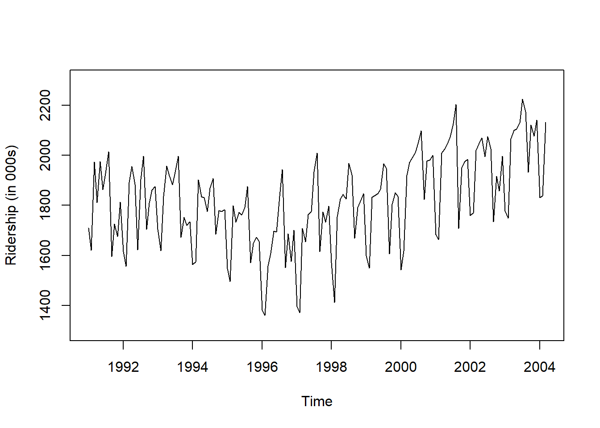
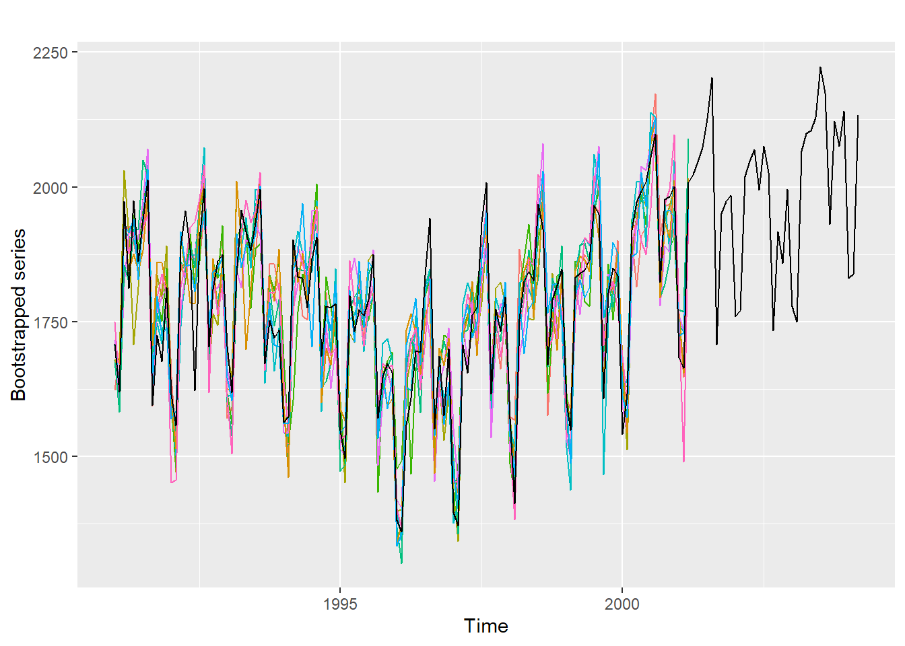
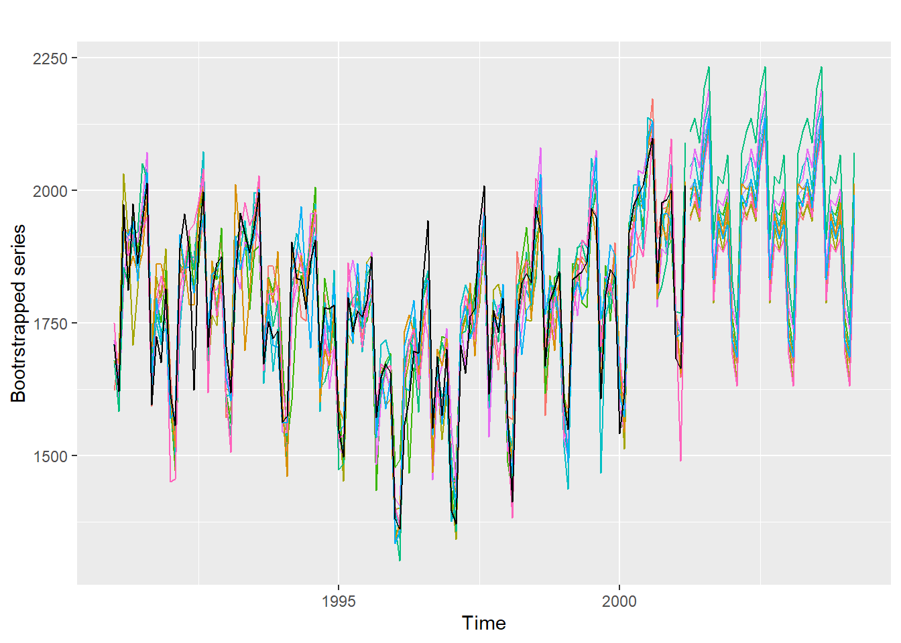
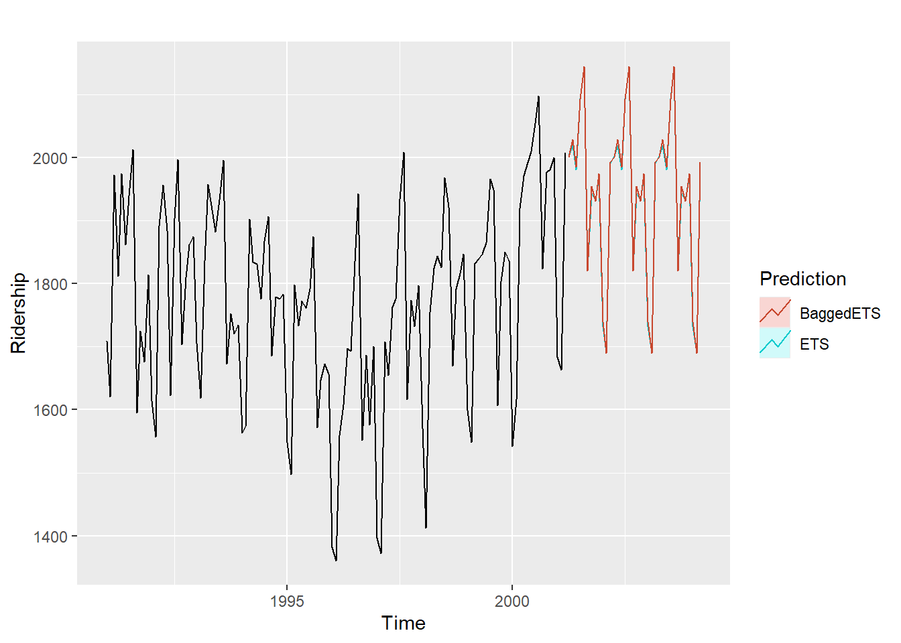
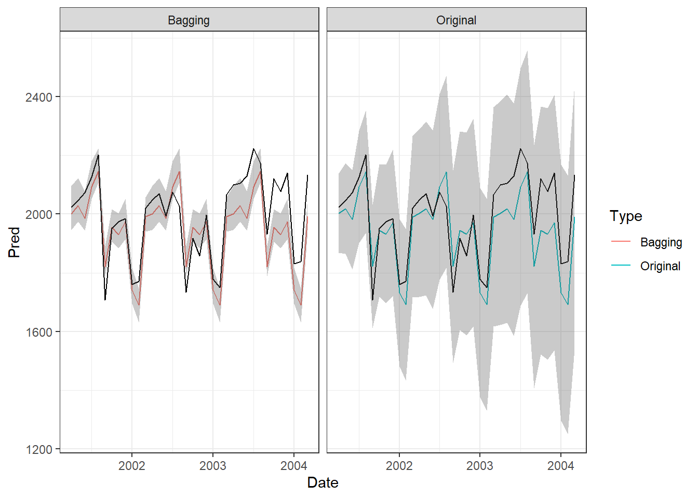
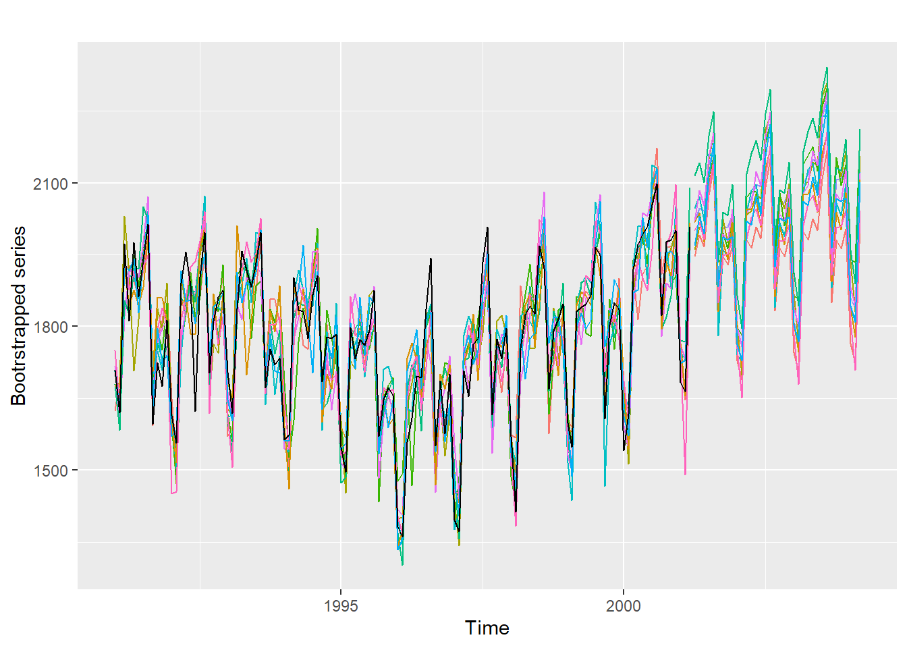
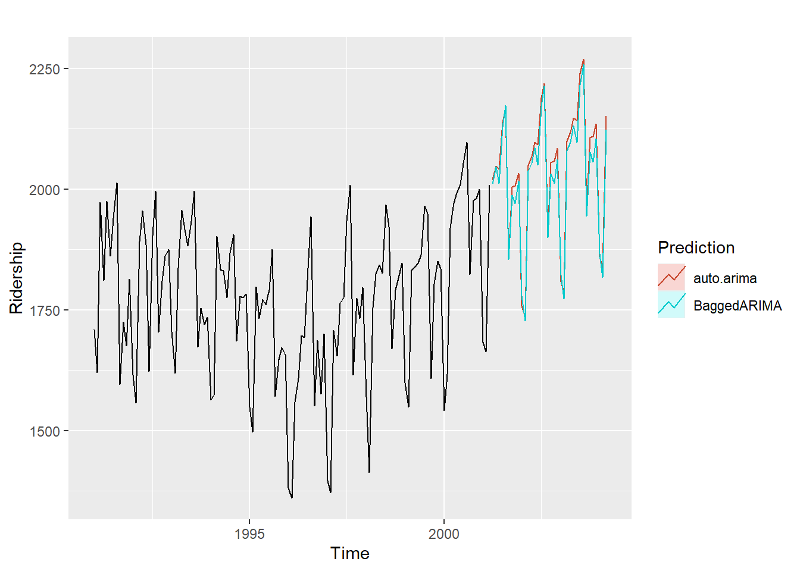
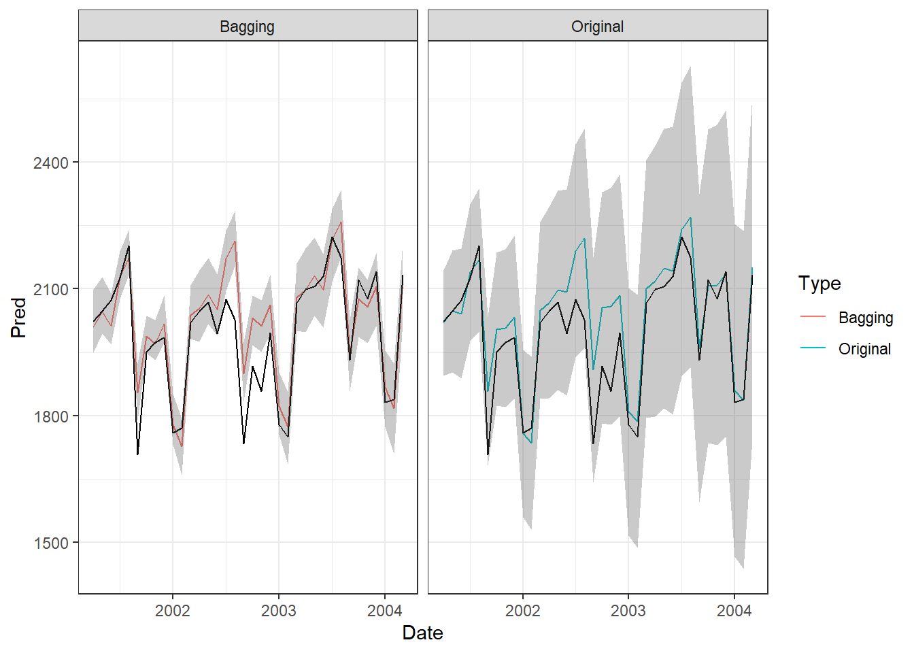

pacman::p_load("forecast",
"dplyr",
"ggplot2",
"doParallel", "parallel") # For 병렬 처리
registerDoParallel(cores=detectCores()) # 사용할 Core 개수 지정
Amtrak.data <- read.csv(".../Amtrak.csv") # 데이터 불러오기
Amtrak.data %>%
as_tibble12 Bootstrap and Bagging
12.1 Amtrak
예제 데이터로 사용하는 "Amtrak.csv"은 1991년 1월부터 2004년 3월까지 미국 철도 회사인 암트랙에서 제공한 월간 승객 수(단위 : 1,000명)가 기록되어져 있다.
12.1.1 데이터 불러오기
# A tibble: 159 × 2
Month Ridership
<chr> <dbl>
1 01/01/1991 1709.
2 01/02/1991 1621.
3 01/03/1991 1973.
4 01/04/1991 1812.
5 01/05/1991 1975.
6 01/06/1991 1862.
7 01/07/1991 1940.
8 01/08/1991 2013.
9 01/09/1991 1596.
10 01/10/1991 1725.
# ℹ 149 more rows12.1.2 데이터 전처리
# 1. Convert to ts for Target
ridership.ts <- ts(Amtrak.data$Ridership,
start = c(1991, 1), # 시계열의 시작 연도 / c(1991, 1) : 1991년 1월
frequency = 12) # 주기 / 월별 시계열로 1년에 12번 관측
# 시계열 그림
plot(ridership.ts,
xlab = "Time", ylab = "Ridership (in 000s)",
ylim = c(1300, 2300))
Caution! CSV 파일로 불러온 데이터를 살펴보면 승객 수를 포함하는 변수 Ridership가 수치형임을 알 수 있다. 시계열 데이터 분석을 위해 함수 ts()를 이용하여 해당 변수를 시계열 객체로 변환해야 한다.
Result! 시계열 그림을 살펴보면 Amtrak 데이터는 U자 형태의 추세를 발견할 수 있으며, 여름(7월과 8월) 동안에 승객이 급증하는 뚜렷한 계절변동도 볼 수 있다.
12.1.3 데이터 분할
Caution! 시계열 데이터 분석 시 모형의 과적합을 피하고 미래 데이터에 대한 예측력을 계산하기 위해 Training Dataset과 Test Dataset으로 분할해야 한다. 시계열 데이터의 경우, 시간에 의존하기 때문에 시간 순서를 고려하여 데이터를 분할해야 한다. 즉, 앞 시점의 데이터를 Training Dataset로 사용하여 모형을 구축하고, 뒷 시점의 데이터를 Test Dataset로 사용하여 구축된 모형의 성능을 평가한다. 여기서는 데이터 분할을 위해 함수 window()를 사용한다.
# Partition for Target
train.ts <- window(ridership.ts,
start = c(1991, 1), # 분할하고자 하는 시계열의 시작 연도 / c(1991, 1) : 1991년 1월
end = c(2001, 3)) # 분할하고자 하는 시계열의 마지막 연도 / c(2001, 3) : 2001년 3월
test.ts <- window(ridership.ts,
start = c(2001, 4)) # 분할하고자 하는 시계열의 시작 연도 / c(2001, 4) : 2001년 4월
nTrain <- length(train.ts) # Training Dataset의 데이터 포인트 개수
nTest <- length(test.ts) # Test Dataset의 데이터 포인트 개수
train.ts %>%
as_tibble# A tibble: 123 × 1
x
<dbl>
1 1709.
2 1621.
3 1973.
4 1812.
5 1975.
6 1862.
7 1940.
8 2013.
9 1596.
10 1725.
# ℹ 113 more rowstest.ts %>%
as_tibble# A tibble: 36 × 1
x
<dbl>
1 2024.
2 2047.
3 2073.
4 2127.
5 2203.
6 1708.
7 1951.
8 1974.
9 1985.
10 1760.
# ℹ 26 more rowsnTrain[1] 123nTest[1] 3612.2 붓스트랩 시계열 생성
배깅(Bagging)은 “Bootstrap Aggregation”의 약어로 예측 성능을 향상시키기 위해 머신러닝 분야에서 널리 사용하고 있는 기법이다.배깅은 Original Dataset으로부터 크기가 동일한 Bootstrap Dataset을 생성한 후, 각 Dataset에 독립적으로 모형 구축을 수행한다.- 그러고나서, 각 모형의 예측 결과를 결합함으로써 예측 성능을 향상시킨다.
배깅의 장점은 예측 구간(Predictive Interval)을 생성할 수 있으며, 예측 성능을 향상시킬 수 있다는 점이다.- 시계열에
배깅기법을 적용하기 위해서 주의해야할 점은 Bootstrap Dataset을 생성할 때시계열의 의존성을 고려해야 한다는 것이다.- 일반적인 Bootstrap 기법은 Data Point가 서로 독립이라는 가정하에서 수행된다.
- 하지만 시계열은 의존성(의존 구조, 자기상관관계)이 존재하기 때문에 일반적인 Bootstrap 기법은 적용할 수 있다.
- 의존 구조를 가지는 Dataset에 적용할 수 있는 다양한 Bootstrap 기법이 있으며, 그중 Moving Block Bootstrap (MBB) 방법을 이용하고자 한다.
- MBB 기법은 정상성 이외의 다른 모형 가정은 필요하지 않다는 장점이 있다.
- 실생활에서 관측되는 시계열은 추세 또는 계절성이 존재하는 비정상 시계열이므로 MBB를 적용하기 위해 Bergmeir et al. (2016)은 새로운 아이디어를 제안했다.
- 원 시계열에 Box-Cox 변환을 적용
- 변환된 시계열을 seasonal and trend decomposition using loess (STL) 또는 loess를 이용하여 추세(Trend), 계절성(Seasonal), 나머지(Remainder) 성분으로 분해
- 나머지 성분에 MBB 방법을 적용
- 생성한 붓스트랩 나머지 성분에 2번에서 분해된 추세와 계절성 성분을 더하여 새로운 시계열 생성
- 원래 스케일(Scale)로 역변환(1번에서 계산된 Box-Cox의 모수를 기반으로)
- 실생활에서 관측되는 시계열은 추세 또는 계절성이 존재하는 비정상 시계열이므로 MBB를 적용하기 위해 Bergmeir et al. (2016)은 새로운 아이디어를 제안했다.
- Bergmeir et al. (2016)에 의해 제안된 알고리듬은 package
"forecast"에서 제공하는 함수bid.mbb.bootstrap()를 통해 구현할 수 있다.
set.seed(10) # Seed 고정 -> 동일한 결과를 출력하기 위해
bootseries <- bld.mbb.bootstrap(train.ts, 10) %>% # 10개의 붓스트랩 시계열 생성
as.data.frame() %>% # Data Frame으로 변환
ts(start = 1991, freq = 12) # 시계열 객체 ts로 변환
# Plot
autoplot(train.ts, ylab = "Bootstrapped series") + # 원 시계열
autolayer(bootseries, colour = TRUE) + # 붓스트랩 시계열
autolayer(ridership.ts, colour = FALSE) + # 원 시계열을 한 번 더 지정해서 맨 앞으로 가져오기
guides(colour = "none")
12.3 배깅 기반의 시계열 예측
- 여기서는 붓스트랩 시계열에 예측 모형들을 적용하고, 그 예측 모형들로부터의 결과를 집약하여 하나의 예측 결과를 끌어내는
배깅을 이용하는 방법을 설명한다. - 시계열에 대한
배깅기법은 다음의 과정을 거쳐 예측을 수행한다.- 함수
bid.mbb.bootstrap()를 이용하여 \(B\)개의 붓스트랩 시계열을 생성 - 각 붓스트랩 시계열에 대한 예측 모형을 생성
- \(B\)개의 붓스트랩 시계열을 생성한 경우, \(B\)개의 예측 모형을 생성할 수 있다.
- 생성한 각 예측 모형에서 예측값을 계산
- 미래 특정 시점에 대해 \(B\)개의 예측값이 생성된다.
- \(B\)개의 예측값에 대해 평균 또는 중앙값 등을 이용하여 최종 예측값을 계산
- 함수
배깅을 이용하면 단일 예측모형보다 더 나은 예측 결과를 얻을 수 있다.
12.3.1 ETS 모형을 이용한 예측
다음은 각 붓스트랩 시계열에 ETS 예측 모형을 적용하여 예측을 수행하는 방법이다.
Caution! 신뢰할 수 있는 결과를 얻기 위해 생성하고자 하는 붓스트랩 데이터셋의 개수는 1000개 이상이 되어야 한다. 여기서는 예시를 위해, 10개의 붓스트랩 시계열을 생성하여 예측을 수행한다.
12.3.1.1 Ver. 1
# 1. 10개의 붓스트랩 시계열 생성
set.seed(10) # Seed 고정 -> 동일한 결과를 출력하기 위해
sim <- bld.mbb.bootstrap(train.ts, 10) %>% # 10개의 붓스트랩 시계열 생성
as.data.frame() %>% # Data Frame으로 변환
ts(frequency = 12, start = 1991) # 시계열 객체 ts로 변환
sim structure.c.1708.917..1620.586..1972.715..1811.665..1974.964.. structure.c.1622.42743753532..1692.92522074207..1917.87774380134..
Jan 1991 1708.917 1622.427
Feb 1991 1620.586 1692.925
Mar 1991 1972.715 1917.878
Apr 1991 1811.665 1927.051
May 1991 1974.964 1896.977
Jun 1991 1862.356 1860.024
Jul 1991 1939.860 1920.411
Aug 1991 2013.264 1988.003
Sep 1991 1595.657 1593.912
Oct 1991 1724.924 1778.545
Nov 1991 1675.667 1811.236
Dec 1991 1813.863 1880.393
Jan 1992 1614.827 1649.308
Feb 1992 1557.088 1526.239
Mar 1992 1891.223 1857.970
Apr 1992 1955.981 1825.309
May 1992 1884.714 1888.040
Jun 1992 1623.042 1861.262
Jul 1992 1903.309 1863.242
Aug 1992 1996.712 1956.475
Sep 1992 1703.897 1706.606
Oct 1992 1810.000 1820.205
Nov 1992 1861.601 1840.053
Dec 1992 1875.122 1909.621
Jan 1993 1705.259 1571.520
Feb 1993 1618.535 1591.936
Mar 1993 1836.709 1890.402
Apr 1993 1957.043 1914.140
May 1993 1917.185 1931.129
Jun 1993 1882.398 1867.962
Jul 1993 1933.009 1873.961
Aug 1993 1996.167 1983.379
Sep 1993 1672.841 1701.722
Oct 1993 1752.827 1856.806
Nov 1993 1720.377 1856.825
Dec 1993 1734.292 1808.348
Jan 1994 1563.365 1589.769
Feb 1994 1573.959 1505.010
Mar 1994 1902.639 1830.286
Apr 1994 1833.888 1843.636
May 1994 1831.049 1761.098
Jun 1994 1775.755 1753.302
Jul 1994 1867.508 1931.264
Aug 1994 1906.608 1961.799
Sep 1994 1685.632 1659.449
Oct 1994 1778.546 1804.432
Nov 1994 1775.995 1686.923
Dec 1994 1783.350 1781.791
Jan 1995 1548.415 1529.807
Feb 1995 1496.925 1509.739
Mar 1995 1798.316 1797.566
Apr 1995 1732.895 1780.642
May 1995 1772.345 1796.128
Jun 1995 1761.207 1720.286
Jul 1995 1791.655 1791.655
Aug 1995 1874.820 1874.820
Sep 1995 1571.309 1571.309
Oct 1995 1646.948 1646.948
Nov 1995 1672.631 1672.631
Dec 1995 1656.845 1656.845
Jan 1996 1381.758 1381.758
Feb 1996 1360.852 1360.852
Mar 1996 1558.575 1558.575
Apr 1996 1608.420 1608.420
May 1996 1696.696 1696.696
Jun 1996 1693.183 1693.183
Jul 1996 1835.516 1835.516
Aug 1996 1942.573 1942.573
Sep 1996 1551.401 1551.401
Oct 1996 1686.508 1686.508
Nov 1996 1576.204 1576.204
Dec 1996 1700.433 1700.433
Jan 1997 1396.588 1396.588
Feb 1997 1371.690 1371.690
Mar 1997 1707.522 1707.522
Apr 1997 1654.604 1654.604
May 1997 1762.903 1762.903
Jun 1997 1775.800 1775.800
Jul 1997 1934.219 1879.459
Aug 1997 2008.055 1873.554
Sep 1997 1615.924 1573.191
Oct 1997 1773.910 1728.875
Nov 1997 1732.368 1662.009
Dec 1997 1796.626 1766.769
Jan 1998 1570.330 1574.412
Feb 1998 1412.691 1567.474
Mar 1998 1754.641 1885.200
Apr 1998 1824.932 1808.399
May 1998 1843.289 1871.755
Jun 1998 1825.964 1793.652
Jul 1998 1968.172 1935.587
Aug 1998 1921.645 2005.900
Sep 1998 1669.597 1576.111
Oct 1998 1791.474 1741.790
Nov 1998 1816.714 1803.500
Dec 1998 1846.754 1824.824
Jan 1999 1599.427 1607.221
Feb 1999 1548.804 1588.800
Mar 1999 1832.333 1787.614
Apr 1999 1839.720 1849.404
May 1999 1846.498 1874.599
Jun 1999 1864.852 1859.175
Jul 1999 1965.743 1968.708
Aug 1999 1949.002 1953.762
Sep 1999 1607.373 1680.764
Oct 1999 1803.664 1843.693
Nov 1999 1850.309 1806.174
Dec 1999 1836.435 1901.017
Jan 2000 1541.660 1624.734
Feb 2000 1616.928 1566.973
Mar 2000 1919.538 1906.078
Apr 2000 1971.493 1814.823
May 2000 1992.301 1909.074
Jun 2000 2009.763 1927.685
Jul 2000 2053.996 2087.675
Aug 2000 2097.471 2173.090
Sep 2000 1823.706 1909.370
Oct 2000 1976.997 1964.622
Nov 2000 1981.408 1968.509
Dec 2000 2000.153 1905.106
Jan 2001 1683.148 1752.476
Feb 2001 1663.404 1647.207
Mar 2001 2007.928 1966.341
structure.c.1678.35741584976..1681.4922251051..2030.56516157946.. structure.c.1679.09101331696..1582.97636089056..1854.1526980279..
Jan 1991 1678.357 1679.091
Feb 1991 1681.492 1582.976
Mar 1991 2030.565 1854.153
Apr 1991 1909.715 1824.543
May 1991 1707.672 1948.536
Jun 1991 1814.613 1884.080
Jul 1991 1953.030 1977.161
Aug 1991 2018.897 2012.104
Sep 1991 1664.064 1662.339
Oct 1991 1837.319 1789.657
Nov 1991 1792.579 1751.282
Dec 1991 1890.302 1849.137
Jan 1992 1601.081 1594.626
Feb 1992 1471.881 1480.169
Mar 1992 1902.656 1759.681
Apr 1992 1843.294 1828.779
May 1992 1902.050 1913.314
Jun 1992 1812.347 1810.883
Jul 1992 1948.720 1862.454
Aug 1992 2009.130 2022.809
Sep 1992 1652.774 1691.644
Oct 1992 1764.466 1859.573
Nov 1992 1744.186 1831.273
Dec 1992 1864.154 1928.531
Jan 1993 1687.119 1617.655
Feb 1993 1647.772 1561.623
Mar 1993 2011.240 1907.212
Apr 1993 1895.509 1923.698
May 1993 1698.584 1917.891
Jun 1993 1805.908 1774.831
Jul 1993 1944.706 1885.784
Aug 1993 2012.618 1894.410
Sep 1993 1659.830 1670.687
Oct 1993 1833.486 1835.852
Nov 1993 1789.146 1807.466
Dec 1993 1884.937 1869.565
Jan 1994 1593.784 1681.975
Feb 1994 1461.151 1526.627
Mar 1994 1888.494 1604.728
Apr 1994 1824.016 1768.493
May 1994 1877.655 1839.089
Jun 1994 1781.841 1817.476
Jul 1994 1912.104 1904.024
Aug 1994 1964.604 2005.660
Sep 1994 1600.339 1650.166
Oct 1994 1701.164 1833.994
Nov 1994 1670.018 1776.053
Dec 1994 1777.971 1722.051
Jan 1995 1588.923 1603.123
Feb 1995 1452.095 1487.476
Mar 1995 1728.915 1804.590
Apr 1995 1710.934 1744.815
May 1995 1837.092 1765.814
Jun 1995 1753.859 1740.908
Jul 1995 1864.888 1753.852
Aug 1995 1878.693 1802.717
Sep 1995 1556.252 1433.929
Oct 1995 1668.300 1651.517
Nov 1995 1653.503 1677.050
Dec 1995 1628.933 1693.512
Jan 1996 1398.977 1476.946
Feb 1996 1401.229 1492.910
Mar 1996 1635.065 1687.493
Apr 1996 1681.681 1467.500
May 1996 1745.835 1664.799
Jun 1996 1666.100 1660.405
Jul 1996 1826.137 1798.654
Aug 1996 1834.947 1830.058
Sep 1996 1490.499 1567.830
Oct 1996 1640.832 1665.250
Nov 1996 1530.071 1724.462
Dec 1996 1618.318 1720.493
Jan 1997 1434.740 1396.521
Feb 1997 1342.755 1487.072
Mar 1997 1736.512 1732.076
Apr 1997 1681.170 1763.915
May 1997 1735.585 1723.959
Jun 1997 1727.544 1817.264
Jul 1997 1786.679 1875.023
Aug 1997 1912.432 1956.299
Sep 1997 1647.110 1594.113
Oct 1997 1812.625 1743.318
Nov 1997 1823.076 1745.173
Dec 1997 1782.184 1744.885
Jan 1998 1571.190 1486.986
Feb 1998 1490.295 1426.740
Mar 1998 1819.434 1806.552
Apr 1998 1835.503 1866.848
May 1998 1755.685 1930.585
Jun 1998 1753.802 1821.509
Jul 1998 1937.678 1902.990
Aug 1998 1978.295 1950.898
Sep 1998 1686.027 1616.993
Oct 1998 1839.168 1736.449
Nov 1998 1729.816 1834.961
Dec 1998 1830.707 1846.467
Jan 1999 1584.744 1617.332
Feb 1999 1499.040 1548.713
Mar 1999 1827.695 1862.706
Apr 1999 1763.164 1860.957
May 1999 1859.851 1787.161
Jun 1999 1860.614 1779.077
Jul 1999 2006.899 1956.752
Aug 1999 2075.282 1994.572
Sep 1999 1677.697 1699.509
Oct 1999 1838.659 1857.722
Nov 1999 1800.092 1753.442
Dec 1999 1874.152 1865.091
Jan 2000 1657.656 1629.886
Feb 2000 1512.841 1630.692
Mar 2000 1867.616 1939.396
Apr 2000 1949.159 1946.643
May 2000 1978.768 1986.300
Jun 2000 1965.637 1931.394
Jul 2000 2112.039 2060.708
Aug 2000 2065.252 2093.635
Sep 2000 1812.944 1842.987
Oct 2000 1937.025 1963.216
Nov 2000 1964.469 1888.650
Dec 2000 1998.205 1906.451
Jan 2001 1754.572 1733.525
Feb 2001 1664.201 1741.216
Mar 2001 1952.834 1985.800
structure.c.1706.53385960804..1641.70380329126..1924.41014476705.. structure.c.1716.50284051107..1597.00099324254..1821.50002277332..
Jan 1991 1706.534 1716.503
Feb 1991 1641.704 1597.001
Mar 1991 1924.410 1821.500
Apr 1991 1905.629 1914.582
May 1991 1906.356 1920.359
Jun 1991 1858.348 1901.518
Jul 1991 1934.376 1976.176
Aug 1991 2040.498 2071.011
Sep 1991 1700.295 1663.756
Oct 1991 1747.889 1769.028
Nov 1991 1709.726 1796.584
Dec 1991 1806.682 1813.211
Jan 1992 1608.817 1590.912
Feb 1992 1502.965 1573.266
Mar 1992 1741.113 1772.855
Apr 1992 1851.792 1841.191
May 1992 1875.168 1872.931
Jun 1992 1873.024 1863.905
Jul 1992 1964.379 1972.776
Aug 1992 2072.764 2020.843
Sep 1992 1679.058 1697.104
Oct 1992 1837.640 1808.275
Nov 1992 1840.420 1813.938
Dec 1992 1828.862 1833.825
Jan 1993 1611.918 1664.095
Feb 1993 1615.044 1612.079
Mar 1993 1849.757 1844.997
Apr 1993 1887.459 1814.068
May 1993 1942.699 1902.670
Jun 1993 1849.527 1893.662
Jul 1993 1996.128 1931.545
Aug 1993 1992.976 1909.901
Sep 1993 1636.564 1686.519
Oct 1993 1778.238 1791.697
Nov 1993 1658.815 1798.796
Dec 1993 1738.153 1774.617
Jan 1994 1545.664 1545.052
Feb 1994 1538.174 1543.999
Mar 1994 1866.530 1774.532
Apr 1994 1918.339 1819.598
May 1994 1876.133 1882.201
Jun 1994 1837.440 1799.234
Jul 1994 1843.061 1956.038
Aug 1994 1974.220 1956.482
Sep 1994 1583.345 1603.665
Oct 1994 1789.385 1745.516
Nov 1994 1689.714 1626.271
Dec 1994 1849.061 1706.215
Jan 1995 1537.958 1514.334
Feb 1995 1508.444 1502.656
Mar 1995 1754.326 1826.824
Apr 1995 1763.999 1868.433
May 1995 1791.402 1816.028
Jun 1995 1695.419 1766.505
Jul 1995 1776.726 1761.297
Aug 1995 1797.698 1883.674
Sep 1995 1539.872 1484.019
Oct 1995 1709.816 1608.633
Nov 1995 1718.119 1659.813
Dec 1995 1680.020 1621.352
Jan 1996 1397.576 1418.796
Feb 1996 1344.844 1405.738
Mar 1996 1629.154 1671.958
Apr 1996 1622.923 1719.922
May 1996 1760.831 1707.018
Jun 1996 1691.660 1636.546
Jul 1996 1816.751 1772.941
Aug 1996 1847.705 1722.963
Sep 1996 1542.412 1454.277
Oct 1996 1655.025 1636.581
Nov 1996 1610.574 1670.537
Dec 1996 1632.273 1739.199
Jan 1997 1376.825 1552.686
Feb 1997 1415.983 1441.353
Mar 1997 1783.041 1758.379
Apr 1997 1822.258 1663.794
May 1997 1795.675 1790.238
Jun 1997 1726.460 1690.321
Jul 1997 1839.641 1824.805
Aug 1997 1880.624 1910.777
Sep 1997 1560.233 1535.065
Oct 1997 1793.940 1730.530
Nov 1997 1764.010 1784.176
Dec 1997 1814.106 1776.366
Jan 1998 1550.166 1509.254
Feb 1998 1518.736 1488.906
Mar 1998 1821.925 1687.189
Apr 1998 1830.578 1738.204
May 1998 1810.060 1827.650
Jun 1998 1787.400 1826.817
Jul 1998 1949.634 1971.831
Aug 1998 1937.484 2080.604
Sep 1998 1667.282 1691.146
Oct 1998 1768.856 1825.928
Nov 1998 1795.157 1715.297
Dec 1998 1746.211 1837.246
Jan 1999 1516.375 1531.118
Feb 1999 1437.391 1499.040
Mar 1999 1844.915 1827.695
Apr 1999 1889.750 1763.164
May 1999 1906.115 1859.851
Jun 1999 1890.645 1860.614
Jul 1999 2060.390 2006.899
Aug 1999 2006.190 2075.282
Sep 1999 1466.583 1677.697
Oct 1999 1762.656 1838.659
Nov 1999 1800.479 1807.965
Dec 1999 1873.534 1862.014
Jan 2000 1619.846 1593.253
Feb 2000 1644.304 1544.705
Mar 2000 1930.496 1843.911
Apr 2000 2009.216 1934.187
May 2000 2011.250 2037.719
Jun 2000 1889.466 2030.621
Jul 2000 2137.662 2082.368
Aug 2000 2129.888 2104.249
Sep 2000 1836.015 1779.665
Oct 2000 1969.672 1890.469
Nov 2000 1880.362 1879.030
Dec 2000 2049.427 2024.771
Jan 2001 1748.040 1761.697
Feb 2001 1729.952 1733.421
Mar 2001 1987.263 2016.014
structure.c.1679.09101331696..1582.97636089056..1854.1526980279...1 structure.c.1678.35741584976..1659.14175244523..1922.31374524569..
Jan 1991 1679.091 1678.357
Feb 1991 1582.976 1659.142
Mar 1991 1854.153 1922.314
Apr 1991 1824.543 1844.306
May 1991 1920.349 1876.054
Jun 1991 1921.101 1845.581
Jul 1991 2049.940 1882.285
Aug 1991 2022.430 1989.658
Sep 1991 1656.617 1705.957
Oct 1991 1766.063 1860.640
Nov 1991 1732.828 1860.258
Dec 1991 1758.021 1813.713
Jan 1992 1617.095 1597.066
Feb 1992 1547.381 1515.739
Mar 1992 1861.927 1844.448
Apr 1992 1842.749 1862.914
May 1992 1891.539 1785.492
Jun 1992 1851.091 1783.807
Jul 1992 1973.526 1967.880
Aug 1992 1973.095 2006.325
Sep 1992 1673.320 1711.884
Oct 1992 1849.196 1867.734
Nov 1992 1776.930 1761.091
Dec 1992 1865.659 1867.974
Jan 1993 1600.773 1628.004
Feb 1993 1539.333 1616.302
Mar 1993 1835.377 2011.240
Apr 1993 1932.387 1895.509
May 1993 1930.842 1698.584
Jun 1993 1885.867 1805.908
Jul 1993 1961.760 1944.706
Aug 1993 2016.736 2012.618
Sep 1993 1687.470 1659.830
Oct 1993 1812.305 1833.486
Nov 1993 1742.887 1789.146
Dec 1993 1791.595 1884.937
Jan 1994 1590.293 1593.784
Feb 1994 1474.199 1461.151
Mar 1994 1818.910 1888.494
Apr 1994 1849.530 1824.016
May 1994 1844.784 1877.655
Jun 1994 1844.960 1781.841
Jul 1994 1908.913 1912.104
Aug 1994 1928.327 1964.604
Sep 1994 1625.749 1600.339
Oct 1994 1639.603 1701.164
Nov 1994 1673.879 1670.018
Dec 1994 1760.270 1777.971
Jan 1995 1473.324 1588.923
Feb 1995 1485.373 1566.786
Mar 1995 1775.471 1808.118
Apr 1995 1796.373 1712.266
May 1995 1810.526 1861.748
Jun 1995 1746.735 1740.202
Jul 1995 1839.997 1861.419
Aug 1995 1859.322 1849.942
Sep 1995 1534.008 1535.684
Oct 1995 1622.599 1653.671
Nov 1995 1666.748 1594.025
Dec 1995 1688.187 1606.423
Jan 1996 1369.659 1341.676
Feb 1996 1302.417 1374.301
Mar 1996 1669.346 1734.826
Apr 1996 1718.331 1765.409
May 1996 1689.562 1730.193
Jun 1996 1581.626 1652.365
Jul 1996 1800.813 1756.932
Aug 1996 1842.336 1793.542
Sep 1996 1563.337 1468.780
Oct 1996 1665.752 1700.715
Nov 1996 1713.810 1669.014
Dec 1996 1677.498 1720.434
Jan 1997 1497.907 1457.820
Feb 1997 1357.273 1432.364
Mar 1997 1729.973 1724.091
Apr 1997 1734.796 1757.274
May 1997 1808.065 1825.345
Jun 1997 1766.042 1687.464
Jul 1997 1881.556 1872.920
Aug 1997 1934.877 1927.180
Sep 1997 1603.492 1645.671
Oct 1997 1741.642 1767.374
Nov 1997 1714.100 1756.885
Dec 1997 1817.608 1789.215
Jan 1998 1568.750 1530.794
Feb 1998 1454.724 1496.492
Mar 1998 1734.667 1776.224
Apr 1998 1801.369 1843.823
May 1998 1883.507 1869.315
Jun 1998 1780.878 1758.081
Jul 1998 1832.251 1850.819
Aug 1998 1994.779 1971.765
Sep 1998 1665.787 1703.932
Oct 1998 1831.007 1768.866
Nov 1998 1799.998 1698.074
Dec 1998 1891.263 1841.308
Jan 1999 1557.513 1586.981
Feb 1999 1494.551 1580.640
Mar 1999 1789.073 1844.765
Apr 1999 1892.018 1871.988
May 1999 1896.407 1864.766
Jun 1999 1861.349 1843.870
Jul 1999 1947.158 1967.323
Aug 1999 2013.015 1906.968
Sep 1999 1694.631 1627.347
Oct 1999 1832.873 1827.227
Nov 1999 1776.862 1810.091
Dec 1999 1842.957 1881.521
Jan 2000 1659.041 1677.579
Feb 2000 1559.634 1543.795
Mar 2000 1921.034 1923.348
Apr 2000 1965.625 1931.960
May 2000 1974.851 2009.017
Jun 2000 1985.133 1965.254
Jul 2000 2059.193 2079.028
Aug 2000 2088.430 2129.434
Sep 2000 1795.674 1795.131
Oct 2000 1819.889 1933.388
Nov 2000 1864.526 1905.953
Dec 2000 1960.636 2012.201
Jan 2001 1771.741 1766.080
Feb 2001 1768.180 1655.429
Mar 2001 2089.283 2016.014
structure.c.1749.43655465283..1627.75975450604..1938.84571798435.. structure.c.1708.70814512987..1627.21507234922..1928.33469491881..
Jan 1991 1749.437 1708.708
Feb 1991 1627.760 1627.215
Mar 1991 1938.846 1928.335
Apr 1991 1876.787 1915.532
May 1991 1916.161 1940.967
Jun 1991 1864.956 1828.921
Jul 1991 1925.845 1946.391
Aug 1991 1948.833 2033.563
Sep 1991 1600.716 1633.460
Oct 1991 1795.521 1797.026
Nov 1991 1838.500 1723.810
Dec 1991 1801.824 1739.657
Jan 1992 1451.300 1570.662
Feb 1992 1456.045 1584.688
Mar 1992 1813.865 1916.801
Apr 1992 1858.474 1853.166
May 1992 1924.284 1855.443
Jun 1992 1935.966 1806.260
Jul 1992 1978.278 1904.124
Aug 1992 2040.613 1951.134
Sep 1992 1618.404 1738.067
Oct 1992 1832.627 1841.848
Nov 1992 1763.949 1850.163
Dec 1992 1819.859 1869.533
Jan 1993 1611.600 1646.612
Feb 1993 1505.697 1603.488
Mar 1993 1875.653 1913.247
Apr 1993 1915.579 1850.662
May 1993 1976.381 1892.948
Jun 1993 1934.154 1882.435
Jul 1993 1954.820 1913.508
Aug 1993 2026.759 2001.860
Sep 1993 1660.036 1703.535
Oct 1993 1804.568 1785.708
Nov 1993 1803.722 1707.581
Dec 1993 1820.877 1703.964
Jan 1994 1638.393 1561.955
Feb 1994 1547.490 1561.236
Mar 1994 1761.484 1846.693
Apr 1994 1889.182 1877.749
May 1994 1856.687 1969.375
Jun 1994 1832.105 1814.769
Jul 1994 1892.920 1703.615
Aug 1994 1959.673 1914.262
Sep 1994 1639.942 1627.524
Oct 1994 1720.106 1771.229
Nov 1994 1687.833 1733.367
Dec 1994 1702.355 1819.770
Jan 1995 1532.035 1543.003
Feb 1995 1538.441 1556.580
Mar 1995 1862.932 1808.118
Apr 1995 1783.982 1712.266
May 1995 1770.944 1861.748
Jun 1995 1704.820 1740.202
Jul 1995 1785.744 1861.419
Aug 1995 1816.062 1849.942
Sep 1995 1586.305 1535.684
Oct 1995 1672.508 1653.671
Nov 1995 1663.246 1588.591
Dec 1995 1669.694 1645.593
Jan 1996 1403.298 1334.872
Feb 1996 1368.437 1357.326
Mar 1996 1647.609 1707.563
Apr 1996 1714.039 1745.294
May 1996 1738.361 1793.044
Jun 1996 1624.448 1670.519
Jul 1996 1714.505 1812.794
Aug 1996 1833.735 1830.265
Sep 1996 1564.187 1538.913
Oct 1996 1629.447 1679.825
Nov 1996 1558.981 1559.768
Dec 1996 1704.496 1638.162
Jan 1997 1452.451 1467.413
Feb 1997 1453.289 1413.922
Mar 1997 1737.623 1746.403
Apr 1997 1801.400 1782.490
May 1997 1767.303 1721.168
Jun 1997 1719.682 1749.995
Jul 1997 1883.682 1866.872
Aug 1997 1967.152 1957.594
Sep 1997 1662.610 1637.352
Oct 1997 1769.322 1759.962
Nov 1997 1685.461 1738.450
Dec 1997 1748.211 1823.491
Jan 1998 1531.337 1537.408
Feb 1998 1382.994 1466.823
Mar 1998 1734.797 1793.103
Apr 1998 1792.258 1690.597
May 1998 1866.455 1773.595
Jun 1998 1854.839 1788.012
Jul 1998 2022.953 1943.809
Aug 1998 2005.726 2029.482
Sep 1998 1698.003 1766.023
Oct 1998 1720.471 1819.071
Nov 1998 1798.887 1820.754
Dec 1998 1771.033 1753.656
Jan 1999 1542.677 1597.331
Feb 1999 1524.704 1487.481
Mar 1999 1763.905 1802.031
Apr 1999 1828.608 1826.953
May 1999 1906.452 1794.407
Jun 1999 1896.108 1814.012
Jul 1999 2020.427 1971.405
Aug 1999 1995.074 2061.754
Sep 1999 1705.662 1757.905
Oct 1999 1800.194 1810.694
Nov 1999 1825.035 1897.388
Dec 1999 1772.776 1877.066
Jan 2000 1686.728 1612.398
Feb 2000 1600.650 1573.048
Mar 2000 1894.683 1870.744
Apr 2000 1940.817 1876.934
May 2000 1900.155 2027.264
Jun 2000 1874.789 1964.967
Jul 2000 1960.627 2096.933
Aug 2000 2122.554 2129.343
Sep 2000 1853.289 1825.504
Oct 2000 1968.541 1954.625
Nov 2000 1995.939 1956.900
Dec 2000 2096.948 1943.045
Jan 2001 1751.672 1723.803
Feb 2001 1490.385 1729.989
Mar 2001 1961.036 1967.763# 2. 각 붓스트랩 시계열에 대해 ETS 모형 적용
fit.ets <- lapply(sim,
function(x) ets(x)) # 함수 ets() : ETS 모형
fit.ets$structure.c.1708.917..1620.586..1972.715..1811.665..1974.964..
ETS(M,N,A)
Call:
ets(y = x)
Smoothing parameters:
alpha = 0.555
gamma = 1e-04
Initial states:
l = 1807.9214
s = 27.0154 -11.2593 0.0101 -121.9422 199.759 149.5166
37.7252 75.4579 59.7349 47.1898 -252.1883 -211.019
sigma: 0.0342
AIC AICc BIC
1615.746 1620.232 1657.929
$structure.c.1622.42743753532..1692.92522074207..1917.87774380134..
ETS(A,N,A)
Call:
ets(y = x)
Smoothing parameters:
alpha = 0.5886
gamma = 1e-04
Initial states:
l = 1820.029
s = 48.0044 -4.4051 13.9424 -120.4869 199.0255 136.4745
39.6509 63.2035 27.5956 44.533 -242.9376 -204.6001
sigma: 51.7915
AIC AICc BIC
1578.053 1582.539 1620.236
$structure.c.1678.35741584976..1681.4922251051..2030.56516157946..
ETS(M,N,A)
Call:
ets(y = x)
Smoothing parameters:
alpha = 0.5722
gamma = 1e-04
Initial states:
l = 1812.414
s = 39.244 -27.3364 18.7412 -124.4246 205.6108 158.6663
30.0723 61.1789 40.0399 66.2689 -275.0331 -193.0281
sigma: 0.0328
AIC AICc BIC
1605.062 1609.548 1647.245
$structure.c.1679.09101331696..1582.97636089056..1854.1526980279..
ETS(A,N,A)
Call:
ets(y = x)
Smoothing parameters:
alpha = 0.4037
gamma = 1e-04
Initial states:
l = 1814.2406
s = 44.3045 8.6347 20.3252 -130.2983 187.9671 125.5879
29.6437 76.5735 36.8099 30.0867 -243.3027 -186.3322
sigma: 61.4745
AIC AICc BIC
1620.217 1624.703 1662.400
$structure.c.1706.53385960804..1641.70380329126..1924.41014476705..
ETS(A,N,A)
Call:
ets(y = x)
Smoothing parameters:
alpha = 0.5625
gamma = 1e-04
Initial states:
l = 1815.808
s = 19.9874 -28.3351 8.237 -151.7746 199.1433 162.3617
42.0646 101.0539 84.9383 43.7667 -253.8362 -227.607
sigma: 56.2798
AIC AICc BIC
1598.498 1602.984 1640.681
$structure.c.1716.50284051107..1597.00099324254..1821.50002277332..
ETS(M,N,A)
Call:
ets(y = x)
Smoothing parameters:
alpha = 0.5721
gamma = 1e-04
Initial states:
l = 1820.7088
s = 19.1546 -11.981 -0.1149 -142.6133 208.2123 154.9857
60.502 95.5317 38.9393 24.3711 -242.5745 -204.4131
sigma: 0.0288
AIC AICc BIC
1572.530 1577.016 1614.713
$structure.c.1679.09101331696..1582.97636089056..1854.1526980279...1
ETS(A,N,A)
Call:
ets(y = x)
Smoothing parameters:
alpha = 0.5689
gamma = 1e-04
Initial states:
l = 1815.0945
s = 31.7731 -22.3832 -8.8311 -127.947 198.5839 157.5626
54.5011 100.5841 75.694 34.8147 -287.9225 -206.4299
sigma: 44.521
AIC AICc BIC
1540.842 1545.328 1583.025
$structure.c.1678.35741584976..1659.14175244523..1922.31374524569..
ETS(M,N,A)
Call:
ets(y = x)
Smoothing parameters:
alpha = 0.4525
gamma = 1e-04
Initial states:
l = 1814.3012
s = 39.3974 -21.8034 18.4249 -127.9589 181.3757 137.2188
14.3669 70.7385 65.8784 75.874 -252.1677 -201.3446
sigma: 0.0302
AIC AICc BIC
1585.353 1589.839 1627.536
$structure.c.1749.43655465283..1627.75975450604..1938.84571798435..
ETS(A,N,A)
Call:
ets(y = x)
Smoothing parameters:
alpha = 0.5507
gamma = 1e-04
Initial states:
l = 1809.207
s = 7.2392 -17.0861 -3.0939 -108.8207 201.9181 150.1434
47.653 93.2531 77.755 32.4511 -270.4003 -211.0119
sigma: 60.6588
AIC AICc BIC
1616.931 1621.417 1659.114
$structure.c.1708.70814512987..1627.21507234922..1928.33469491881..
ETS(M,N,A)
Call:
ets(y = x)
Smoothing parameters:
alpha = 0.5731
gamma = 2e-04
Initial states:
l = 1814.7208
s = 5.4728 -21.6853 12.0212 -98.8551 205.6608 131.325
36.4825 91.0304 38.7781 61.0381 -245.1723 -216.0964
sigma: 0.0312
AIC AICc BIC
1592.930 1597.416 1635.112 Caution! ETS 모형 생성은 함수 ets()를 이용하며 각 붓스트랩 시계열에 ETS 모형을 적용하기 위해 함수 lapply()를 이용할 수 있다. 해당 함수는 붓스트랩 시계열 각각에 함수 ets()를 적용하며 리스트 형태로 출력한다.
게다가, 맥(Mac)에서는 package "parallel"에서 제공하는 함수 mclapply()를 이용하면 병렬 처리가 가능하며, 옵션 mc.core에 사용할 코어 개수를 지정할 수 있다.
Result! 총 10개의 ETS 예측 모형이 생성된 것을 알 수 있다.
# 3. 예측
start <- tsp(train.ts)[2]+1/12 # tsp(time series)[2] : Last Date +1/12 = First Date in Forecast
## 3-1. 각 ETS 모형의 예측 결과 생성
fc <- lapply(fit.ets,
function(x){
forecast(x, h = nTest)[["mean"]] # Test Dataset의 데이터 포인트 개수만큼 예측값 계산
}) %>%
as.data.frame() %>% # Data Frame으로 변환
ts(frequency = 12, start = start) # 시계열 객체 ts로 변환
fc structure.c.1708.917..1620.586..1972.715..1811.665..1974.964.. structure.c.1622.42743753532..1692.92522074207..1917.87774380134..
Apr 2001 2003.205 1944.027
May 2001 2018.952 1979.631
Jun 2001 1981.205 1956.072
Jul 2001 2092.997 2052.898
Aug 2001 2143.241 2115.450
Sep 2001 1821.540 1795.938
Oct 2001 1943.494 1930.367
Nov 2001 1932.226 1912.019
Dec 2001 1970.498 1964.421
Jan 2002 1732.468 1711.829
Feb 2002 1691.293 1673.494
Mar 2002 1990.676 1960.962
Apr 2002 2003.205 1944.027
May 2002 2018.952 1979.631
Jun 2002 1981.205 1956.072
Jul 2002 2092.997 2052.898
Aug 2002 2143.241 2115.450
Sep 2002 1821.540 1795.938
Oct 2002 1943.494 1930.367
Nov 2002 1932.226 1912.019
Dec 2002 1970.498 1964.421
Jan 2003 1732.468 1711.829
Feb 2003 1691.293 1673.494
Mar 2003 1990.676 1960.962
Apr 2003 2003.205 1944.027
May 2003 2018.952 1979.631
Jun 2003 1981.205 1956.072
Jul 2003 2092.997 2052.898
Aug 2003 2143.241 2115.450
Sep 2003 1821.540 1795.938
Oct 2003 1943.494 1930.367
Nov 2003 1932.226 1912.019
Dec 2003 1970.498 1964.421
Jan 2004 1732.468 1711.829
Feb 2004 1691.293 1673.494
Mar 2004 1990.676 1960.962
structure.c.1678.35741584976..1681.4922251051..2030.56516157946.. structure.c.1679.09101331696..1582.97636089056..1854.1526980279..
Apr 2001 1951.591 1981.128
May 2001 1972.709 2020.901
Jun 2001 1941.636 1973.971
Jul 2001 2070.234 2069.911
Aug 2001 2117.171 2132.285
Sep 2001 1787.134 1814.026
Oct 2001 1930.298 1964.648
Nov 2001 1884.231 1952.954
Dec 2001 1950.804 1988.624
Jan 2002 1718.543 1757.993
Feb 2002 1636.527 1701.028
Mar 2002 1977.830 1974.410
Apr 2002 1951.591 1981.128
May 2002 1972.709 2020.901
Jun 2002 1941.636 1973.971
Jul 2002 2070.234 2069.911
Aug 2002 2117.171 2132.285
Sep 2002 1787.134 1814.026
Oct 2002 1930.298 1964.648
Nov 2002 1884.231 1952.954
Dec 2002 1950.804 1988.624
Jan 2003 1718.543 1757.993
Feb 2003 1636.527 1701.028
Mar 2003 1977.830 1974.410
Apr 2003 1951.591 1981.128
May 2003 1972.709 2020.901
Jun 2003 1941.636 1973.971
Jul 2003 2070.234 2069.911
Aug 2003 2117.171 2132.285
Sep 2003 1787.134 1814.026
Oct 2003 1930.298 1964.648
Nov 2003 1884.231 1952.954
Dec 2003 1950.804 1988.624
Jan 2004 1718.543 1757.993
Feb 2004 1636.527 1701.028
Mar 2004 1977.830 1974.410
structure.c.1706.53385960804..1641.70380329126..1924.41014476705.. structure.c.1716.50284051107..1597.00099324254..1821.50002277332..
Apr 2001 2045.434 2021.504
May 2001 2061.554 2078.087
Jun 2001 2002.567 2043.057
Jul 2001 2122.865 2137.546
Aug 2001 2159.645 2190.763
Sep 2001 1808.731 1839.945
Oct 2001 1968.740 1982.435
Nov 2001 1932.169 1970.575
Dec 2001 1980.497 2001.725
Jan 2002 1732.907 1778.152
Feb 2002 1706.667 1739.980
Mar 2002 2004.265 2006.922
Apr 2002 2045.434 2021.504
May 2002 2061.554 2078.087
Jun 2002 2002.567 2043.057
Jul 2002 2122.865 2137.546
Aug 2002 2159.645 2190.763
Sep 2002 1808.731 1839.945
Oct 2002 1968.740 1982.435
Nov 2002 1932.169 1970.575
Dec 2002 1980.497 2001.725
Jan 2003 1732.907 1778.152
Feb 2003 1706.667 1739.980
Mar 2003 2004.265 2006.922
Apr 2003 2045.434 2021.504
May 2003 2061.554 2078.087
Jun 2003 2002.567 2043.057
Jul 2003 2122.865 2137.546
Aug 2003 2159.645 2190.763
Sep 2003 1808.731 1839.945
Oct 2003 1968.740 1982.435
Nov 2003 1932.169 1970.575
Dec 2003 1980.497 2001.725
Jan 2004 1732.907 1778.152
Feb 2004 1706.667 1739.980
Mar 2004 2004.265 2006.922
structure.c.1679.09101331696..1582.97636089056..1854.1526980279...1 structure.c.1678.35741584976..1659.14175244523..1922.31374524569..
Apr 2001 2110.640 2002.758
May 2001 2135.537 2007.625
Jun 2001 2089.457 1951.256
Jul 2001 2192.516 2074.107
Aug 2001 2233.537 2118.264
Sep 2001 1907.014 1808.928
Oct 2001 2026.113 1955.311
Nov 2001 2012.567 1915.083
Dec 2001 2066.729 1976.290
Jan 2002 1828.534 1735.550
Feb 2002 1747.042 1684.724
Mar 2002 2069.768 2012.761
Apr 2002 2110.640 2002.758
May 2002 2135.537 2007.625
Jun 2002 2089.457 1951.256
Jul 2002 2192.516 2074.107
Aug 2002 2233.537 2118.264
Sep 2002 1907.014 1808.928
Oct 2002 2026.113 1955.311
Nov 2002 2012.567 1915.083
Dec 2002 2066.729 1976.290
Jan 2003 1828.534 1735.550
Feb 2003 1747.042 1684.724
Mar 2003 2069.768 2012.761
Apr 2003 2110.640 2002.758
May 2003 2135.537 2007.625
Jun 2003 2089.457 1951.256
Jul 2003 2192.516 2074.107
Aug 2003 2233.537 2118.264
Sep 2003 1907.014 1808.928
Oct 2003 2026.113 1955.311
Nov 2003 2012.567 1915.083
Dec 2003 2066.729 1976.290
Jan 2004 1828.534 1735.550
Feb 2004 1747.042 1684.724
Mar 2004 2069.768 2012.761
structure.c.1749.43655465283..1627.75975450604..1938.84571798435.. structure.c.1708.70814512987..1627.21507234922..1928.33469491881..
Apr 2001 1978.931 1968.874
May 2001 1994.439 2021.115
Jun 2001 1948.845 1966.562
Jul 2001 2051.318 2061.412
Aug 2001 2103.103 2135.746
Sep 2001 1792.361 1831.243
Oct 2001 1898.095 1942.113
Nov 2001 1884.104 1908.413
Dec 2001 1908.430 1935.556
Jan 2002 1690.177 1714.015
Feb 2002 1630.765 1684.919
Mar 2002 1933.643 1991.120
Apr 2002 1978.931 1968.874
May 2002 1994.439 2021.115
Jun 2002 1948.845 1966.562
Jul 2002 2051.318 2061.412
Aug 2002 2103.103 2135.746
Sep 2002 1792.361 1831.243
Oct 2002 1898.095 1942.113
Nov 2002 1884.104 1908.413
Dec 2002 1908.430 1935.556
Jan 2003 1690.177 1714.015
Feb 2003 1630.765 1684.919
Mar 2003 1933.643 1991.120
Apr 2003 1978.931 1968.874
May 2003 1994.439 2021.115
Jun 2003 1948.845 1966.562
Jul 2003 2051.318 2061.412
Aug 2003 2103.103 2135.746
Sep 2003 1792.361 1831.243
Oct 2003 1898.095 1942.113
Nov 2003 1884.104 1908.413
Dec 2003 1908.430 1935.556
Jan 2004 1690.177 1714.015
Feb 2004 1630.765 1684.919
Mar 2004 1933.643 1991.120Result! 위에서 생성한 10개의 ETS 예측 모형 각각에 대해 예측값이 생성된 것을 확인할 수 있다.
# Plot
autoplot(train.ts) + # 원 시계열
autolayer(sim, colour = TRUE) + # 붓스트랩 시계열
autolayer(fc, colour = TRUE) + # 특정 시점까지의 예측값
autolayer(train.ts, colour = FALSE) + # 원 시계열을 한 번 더 지정해서 맨 앞으로 가져오기
ylab("Bootrstrapped series") +
guides(colour = "none")
# 4. 평균을 이용한 최종 예측
apply(fc, 1, mean) # 중앙값일 경우, mean -> median [1] 2000.809 2029.055 1985.463 2092.580 2144.920 1820.686 1954.161 1930.434 1974.357 1740.017 1689.644 1992.236 2000.809 2029.055 1985.463 2092.580 2144.920 1820.686 1954.161 1930.434 1974.357
[22] 1740.017 1689.644 1992.236 2000.809 2029.055 1985.463 2092.580 2144.920 1820.686 1954.161 1930.434 1974.357 1740.017 1689.644 1992.23612.3.1.2 Ver. 2
Caution! 붓스트랩 시계열을 생성하고 각각에 ETS 예측 모형을 생성하는 과정은 함수 baggedETS()를 통해 수행할 수 있다. 예를 들어, 10개의 붓스트랩 시계열 각각에 대해 ETS 예측 모형을 생성하는 코드 lapply(bld.mbb.bootstrap(train.ts, 10), function(x){ets(x)})은
baggedETS(train.ts, bld.mbb.bootstrap(train.ts, 10))와 동일하다.
# 1-4번 : 10개의 붓스트랩 시계열을 생성하고 각각에 ETS 예측 모형을 생성한 후 예측
set.seed(10) # Seed 고정 -> 동일한 결과를 출력하기 위해
baggedfc <- train.ts %>%
baggedETS(bld.mbb.bootstrap(train.ts, 10)) %>% # 10개의 붓스트랩 시계열을 생성한 후, 각각에 ETS 예측 모형 생성
forecast(h = nTest) # Test Dataset의 데이터 포인트 개수만큼 예측값 계산
baggedfc Point Forecast Lo 100 Hi 100
Apr 2001 2000.809 1944.027 2110.640
May 2001 2029.055 1972.709 2135.537
Jun 2001 1985.463 1941.636 2089.457
Jul 2001 2092.580 2051.318 2192.516
Aug 2001 2144.920 2103.103 2233.537
Sep 2001 1820.686 1787.134 1907.014
Oct 2001 1954.161 1898.095 2026.113
Nov 2001 1930.434 1884.104 2012.567
Dec 2001 1974.357 1908.430 2066.729
Jan 2002 1740.017 1690.177 1828.534
Feb 2002 1689.644 1630.765 1747.042
Mar 2002 1992.236 1933.643 2069.768
Apr 2002 2000.809 1944.027 2110.640
May 2002 2029.055 1972.709 2135.537
Jun 2002 1985.463 1941.636 2089.457
Jul 2002 2092.580 2051.318 2192.516
Aug 2002 2144.920 2103.103 2233.537
Sep 2002 1820.686 1787.134 1907.014
Oct 2002 1954.161 1898.095 2026.113
Nov 2002 1930.434 1884.104 2012.567
Dec 2002 1974.357 1908.430 2066.729
Jan 2003 1740.017 1690.177 1828.534
Feb 2003 1689.644 1630.765 1747.042
Mar 2003 1992.236 1933.643 2069.768
Apr 2003 2000.809 1944.027 2110.640
May 2003 2029.055 1972.709 2135.537
Jun 2003 1985.463 1941.636 2089.457
Jul 2003 2092.580 2051.318 2192.516
Aug 2003 2144.920 2103.103 2233.537
Sep 2003 1820.686 1787.134 1907.014
Oct 2003 1954.161 1898.095 2026.113
Nov 2003 1930.434 1884.104 2012.567
Dec 2003 1974.357 1908.430 2066.729
Jan 2004 1740.017 1690.177 1828.534
Feb 2004 1689.644 1630.765 1747.042
Mar 2004 1992.236 1933.643 2069.768Result! 결과에서 Point Forecast는 특정 시점에서의 붓스트랩 예측값들의 평균이며, 위의 “Ver.1”에서 “4. 평균을 이용한 최종 예측”과 결과가 동일하다. Lo 100은 특정 시점에서의 붓스트랩 예측값들의 최솟값, Hi 100는 특정 시점에서의 붓스트랩 예측값들의 최댓값을 의미한다.
# 특정 시점에서 각 붓스트랩 시계열의 예측값
baggedfc$forecasts_boot [,1] [,2] [,3] [,4] [,5] [,6] [,7] [,8] [,9] [,10]
[1,] 2003.205 1944.027 1951.591 1981.128 2045.434 2021.504 2110.640 2002.758 1978.931 1968.874
[2,] 2018.952 1979.631 1972.709 2020.901 2061.554 2078.087 2135.537 2007.625 1994.439 2021.115
[3,] 1981.205 1956.072 1941.636 1973.971 2002.567 2043.057 2089.457 1951.256 1948.845 1966.562
[4,] 2092.997 2052.898 2070.234 2069.911 2122.865 2137.546 2192.516 2074.107 2051.318 2061.412
[5,] 2143.241 2115.450 2117.171 2132.285 2159.645 2190.763 2233.537 2118.264 2103.103 2135.746
[6,] 1821.540 1795.938 1787.134 1814.026 1808.731 1839.945 1907.014 1808.928 1792.361 1831.243
[7,] 1943.494 1930.367 1930.298 1964.648 1968.740 1982.435 2026.113 1955.311 1898.095 1942.113
[8,] 1932.226 1912.019 1884.231 1952.954 1932.169 1970.575 2012.567 1915.083 1884.104 1908.413
[9,] 1970.498 1964.421 1950.804 1988.624 1980.497 2001.725 2066.729 1976.290 1908.430 1935.556
[10,] 1732.468 1711.829 1718.543 1757.993 1732.907 1778.152 1828.534 1735.550 1690.177 1714.015
[11,] 1691.293 1673.494 1636.527 1701.028 1706.667 1739.980 1747.042 1684.724 1630.765 1684.919
[12,] 1990.676 1960.962 1977.830 1974.410 2004.265 2006.922 2069.768 2012.761 1933.643 1991.120
[13,] 2003.205 1944.027 1951.591 1981.128 2045.434 2021.504 2110.640 2002.758 1978.931 1968.874
[14,] 2018.952 1979.631 1972.709 2020.901 2061.554 2078.087 2135.537 2007.625 1994.439 2021.115
[15,] 1981.205 1956.072 1941.636 1973.971 2002.567 2043.057 2089.457 1951.256 1948.845 1966.562
[16,] 2092.997 2052.898 2070.234 2069.911 2122.865 2137.546 2192.516 2074.107 2051.318 2061.412
[17,] 2143.241 2115.450 2117.171 2132.285 2159.645 2190.763 2233.537 2118.264 2103.103 2135.746
[18,] 1821.540 1795.938 1787.134 1814.026 1808.731 1839.945 1907.014 1808.928 1792.361 1831.243
[19,] 1943.494 1930.367 1930.298 1964.648 1968.740 1982.435 2026.113 1955.311 1898.095 1942.113
[20,] 1932.226 1912.019 1884.231 1952.954 1932.169 1970.575 2012.567 1915.083 1884.104 1908.413
[21,] 1970.498 1964.421 1950.804 1988.624 1980.497 2001.725 2066.729 1976.290 1908.430 1935.556
[22,] 1732.468 1711.829 1718.543 1757.993 1732.907 1778.152 1828.534 1735.550 1690.177 1714.015
[23,] 1691.293 1673.494 1636.527 1701.028 1706.667 1739.980 1747.042 1684.724 1630.765 1684.919
[24,] 1990.676 1960.962 1977.830 1974.410 2004.265 2006.922 2069.768 2012.761 1933.643 1991.120
[25,] 2003.205 1944.027 1951.591 1981.128 2045.434 2021.504 2110.640 2002.758 1978.931 1968.874
[26,] 2018.952 1979.631 1972.709 2020.901 2061.554 2078.087 2135.537 2007.625 1994.439 2021.115
[27,] 1981.205 1956.072 1941.636 1973.971 2002.567 2043.057 2089.457 1951.256 1948.845 1966.562
[28,] 2092.997 2052.898 2070.234 2069.911 2122.865 2137.546 2192.516 2074.107 2051.318 2061.412
[29,] 2143.241 2115.450 2117.171 2132.285 2159.645 2190.763 2233.537 2118.264 2103.103 2135.746
[30,] 1821.540 1795.938 1787.134 1814.026 1808.731 1839.945 1907.014 1808.928 1792.361 1831.243
[31,] 1943.494 1930.367 1930.298 1964.648 1968.740 1982.435 2026.113 1955.311 1898.095 1942.113
[32,] 1932.226 1912.019 1884.231 1952.954 1932.169 1970.575 2012.567 1915.083 1884.104 1908.413
[33,] 1970.498 1964.421 1950.804 1988.624 1980.497 2001.725 2066.729 1976.290 1908.430 1935.556
[34,] 1732.468 1711.829 1718.543 1757.993 1732.907 1778.152 1828.534 1735.550 1690.177 1714.015
[35,] 1691.293 1673.494 1636.527 1701.028 1706.667 1739.980 1747.042 1684.724 1630.765 1684.919
[36,] 1990.676 1960.962 1977.830 1974.410 2004.265 2006.922 2069.768 2012.761 1933.643 1991.120Result! 열 번호는 생성된 10개의 붓스트랩 시계열 각각을 의미하며, 각 열의 값들은 특정 시점까지 붓스트랩 시계열에 대한 예측값이다.
# 특정 시점에서 붓스트랩 예측값들의 평균
baggedfc$mean Jan Feb Mar Apr May Jun Jul Aug Sep Oct Nov Dec
2001 2000.809 2029.055 1985.463 2092.580 2144.920 1820.686 1954.161 1930.434 1974.357
2002 1740.017 1689.644 1992.236 2000.809 2029.055 1985.463 2092.580 2144.920 1820.686 1954.161 1930.434 1974.357
2003 1740.017 1689.644 1992.236 2000.809 2029.055 1985.463 2092.580 2144.920 1820.686 1954.161 1930.434 1974.357
2004 1740.017 1689.644 1992.236 # 특정 시점에서 붓스트랩 예측값들의 중앙값
baggedfc$median Jan Feb Mar Apr May Jun Jul Aug Sep Oct Nov Dec
2001 1991.943 2019.926 1970.267 2072.170 2134.016 1811.477 1949.403 1923.626 1973.394
2002 1732.687 1688.106 1990.898 1991.943 2019.926 1970.267 2072.170 2134.016 1811.477 1949.403 1923.626 1973.394
2003 1732.687 1688.106 1990.898 1991.943 2019.926 1970.267 2072.170 2134.016 1811.477 1949.403 1923.626 1973.394
2004 1732.687 1688.106 1990.898 # 95% Predictive Interval
boot.pred <- t(baggedfc$forecasts_boot) # 특정 시점에서 각 붓스트랩 시계열의 예측값
PI.pred <- apply(boot.pred, 2, function(x) { quantile(x, probs = c(0.025, 0.975) ) })Result! 95% 예측 구간은 붓스트랩 시계열에 대한 예측값들의 분위수를 계산하여 얻을 수 있다.
# Results for 95% Predictive Interval
data.frame("PI.lower" = PI.pred[1,], "PI.upper" = PI.pred[2,],
"length of PI" = PI.pred[2,]-PI.pred[1,]) %>%
as_tibble()# A tibble: 36 × 3
PI.lower PI.upper length.of.PI
<dbl> <dbl> <dbl>
1 1946. 2096. 150.
2 1974. 2123. 148.
3 1943. 2079. 136.
4 2052. 2180. 128.
5 2106. 2224. 118.
6 1788. 1892. 104.
7 1905. 2016. 111.
8 1884. 2003. 119.
9 1915. 2052. 138.
10 1695. 1817. 122.
# ℹ 26 more rows12.3.1.3 예측 결과 비교
- 원 시계열을 이용한 예측 결과와 배깅을 이용한 예측 결과를 비교한다.
# 원 시계열에 대한 예측
etsfc <- train.ts %>%
ets() %>% # ETS 예측 모형 생성
forecast(h = nTest) # Test Dataset의 데이터 포인트 개수만큼 예측값 계산
# Plot
autoplot(train.ts) + # 원 시계열
ylab("Ridership") + # y축 라벨
autolayer(etsfc, series = "ETS", PI = FALSE) + # 원 시계열에 대한 예측 결과
autolayer(baggedfc, series = "BaggedETS", PI = FALSE) + # 배깅을 이용한 예측 결과
guides(colour= guide_legend(title = "Prediction"))
# Plot with Predictive Interval
## 1. Original Prediction Result
Original <- data.frame("Date" = as.numeric(time(test.ts)), # Date
"Y" = c(test.ts), # Test Dataset
"Pred" = c(etsfc$mean), # Prediction Result
"PI.lower" = c(etsfc$lower[,2]), # Lower of Predictive Interval
"PI.upper" = c(etsfc$upper[,2]), # Upper of Predictive Interval
"Type" = "Original"
)
Original %>%
as_tibble# A tibble: 36 × 6
Date Y Pred PI.lower PI.upper Type
<dbl> <dbl> <dbl> <dbl> <dbl> <chr>
1 2001. 2024. 2003. 1869. 2138. Original
2 2001. 2047. 2019. 1864. 2174. Original
3 2001. 2073. 1981. 1811. 2151. Original
4 2002. 2127. 2093. 1902. 2284. Original
5 2002. 2203. 2143. 1935. 2352. Original
6 2002. 1708. 1822. 1612. 2032. Original
7 2002. 1951. 1943. 1718. 2169. Original
8 2002. 1974. 1932. 1696. 2169. Original
9 2002. 1985. 1970. 1722. 2219. Original
10 2002 1760. 1732. 1481. 1984. Original
# ℹ 26 more rows## 2. Bagging Prediction Result
Bagging <- data.frame("Date" = as.numeric(time(test.ts)), # Date
"Y" = c(test.ts), # Test Dataset
"Pred" = c(baggedfc$mean), # Prediction Result
"PI.lower" = PI.pred[1,], # Lower of Predictive Interval
"PI.upper" = PI.pred[2,], # Upper of Predictive Interval
"Type" = "Bagging"
)
Bagging %>%
as_tibble# A tibble: 36 × 6
Date Y Pred PI.lower PI.upper Type
<dbl> <dbl> <dbl> <dbl> <dbl> <chr>
1 2001. 2024. 2001. 1946. 2096. Bagging
2 2001. 2047. 2029. 1974. 2123. Bagging
3 2001. 2073. 1985. 1943. 2079. Bagging
4 2002. 2127. 2093. 2052. 2180. Bagging
5 2002. 2203. 2145. 2106. 2224. Bagging
6 2002. 1708. 1821. 1788. 1892. Bagging
7 2002. 1951. 1954. 1905. 2016. Bagging
8 2002. 1974. 1930. 1884. 2003. Bagging
9 2002. 1985. 1974. 1915. 2052. Bagging
10 2002 1760. 1740. 1695. 1817. Bagging
# ℹ 26 more rows## 3. Combine
df <- rbind(Original, Bagging)
df %>%
as_tibble# A tibble: 72 × 6
Date Y Pred PI.lower PI.upper Type
<dbl> <dbl> <dbl> <dbl> <dbl> <chr>
1 2001. 2024. 2003. 1869. 2138. Original
2 2001. 2047. 2019. 1864. 2174. Original
3 2001. 2073. 1981. 1811. 2151. Original
4 2002. 2127. 2093. 1902. 2284. Original
5 2002. 2203. 2143. 1935. 2352. Original
6 2002. 1708. 1822. 1612. 2032. Original
7 2002. 1951. 1943. 1718. 2169. Original
8 2002. 1974. 1932. 1696. 2169. Original
9 2002. 1985. 1970. 1722. 2219. Original
10 2002 1760. 1732. 1481. 1984. Original
# ℹ 62 more rows## 4. Plot
ggplot(df, aes(x = Date, y = Pred, group = Type)) +
geom_line(aes(col = Type)) +
geom_line(aes(y = Y)) + # Test Dataset
geom_ribbon(aes(ymin = PI.lower, ymax = PI.upper), fill = "grey30", alpha = 0.3) +
facet_wrap(~Type) +
theme_bw()
# 예측 정확도
forecast::accuracy(etsfc$mean, test.ts) ME RMSE MAE MPE MAPE ACF1 Theil's U
Test set 49.72735 88.6281 73.96379 2.391188 3.707185 0.6542535 0.5135193forecast::accuracy(baggedfc$mean, test.ts) ME RMSE MAE MPE MAPE ACF1 Theil's U
Test set 47.01337 86.93535 71.90957 2.25561 3.604955 0.6594568 0.503996812.3.2 ARIMA 모형을 이용한 예측
다음은 각 붓스트랩 시계열에 ARIMA 예측 모형을 적용하여 예측을 수행하는 방법이다.
Caution! 일반적으로 ETS 모형보다 ARIMA 모형이 더 정확한 것으로 알려져 있으며, 신뢰할 수 있는 결과를 얻기 위해서 생성하고자 하는 붓스트랩 데이터셋의 개수는 1000개 이상이 되어야 한다. 여기서는 예시를 위해, 10개의 붓스트랩 시계열을 생성하여 예측을 수행한다.
12.3.2.1 Ver. 1
# 1. 10개의 붓스트랩 시계열 생성
set.seed(10) # Seed 고정 -> 동일한 결과를 출력하기 위해
sim <- bld.mbb.bootstrap(train.ts, 10) %>% # 10개의 붓스트랩 시계열 생성
as.data.frame() %>% # Data Frame으로 변환
ts(frequency = 12, start = 1991) # 시계열 객체 ts로 변환
sim structure.c.1708.917..1620.586..1972.715..1811.665..1974.964.. structure.c.1622.42743753532..1692.92522074207..1917.87774380134..
Jan 1991 1708.917 1622.427
Feb 1991 1620.586 1692.925
Mar 1991 1972.715 1917.878
Apr 1991 1811.665 1927.051
May 1991 1974.964 1896.977
Jun 1991 1862.356 1860.024
Jul 1991 1939.860 1920.411
Aug 1991 2013.264 1988.003
Sep 1991 1595.657 1593.912
Oct 1991 1724.924 1778.545
Nov 1991 1675.667 1811.236
Dec 1991 1813.863 1880.393
Jan 1992 1614.827 1649.308
Feb 1992 1557.088 1526.239
Mar 1992 1891.223 1857.970
Apr 1992 1955.981 1825.309
May 1992 1884.714 1888.040
Jun 1992 1623.042 1861.262
Jul 1992 1903.309 1863.242
Aug 1992 1996.712 1956.475
Sep 1992 1703.897 1706.606
Oct 1992 1810.000 1820.205
Nov 1992 1861.601 1840.053
Dec 1992 1875.122 1909.621
Jan 1993 1705.259 1571.520
Feb 1993 1618.535 1591.936
Mar 1993 1836.709 1890.402
Apr 1993 1957.043 1914.140
May 1993 1917.185 1931.129
Jun 1993 1882.398 1867.962
Jul 1993 1933.009 1873.961
Aug 1993 1996.167 1983.379
Sep 1993 1672.841 1701.722
Oct 1993 1752.827 1856.806
Nov 1993 1720.377 1856.825
Dec 1993 1734.292 1808.348
Jan 1994 1563.365 1589.769
Feb 1994 1573.959 1505.010
Mar 1994 1902.639 1830.286
Apr 1994 1833.888 1843.636
May 1994 1831.049 1761.098
Jun 1994 1775.755 1753.302
Jul 1994 1867.508 1931.264
Aug 1994 1906.608 1961.799
Sep 1994 1685.632 1659.449
Oct 1994 1778.546 1804.432
Nov 1994 1775.995 1686.923
Dec 1994 1783.350 1781.791
Jan 1995 1548.415 1529.807
Feb 1995 1496.925 1509.739
Mar 1995 1798.316 1797.566
Apr 1995 1732.895 1780.642
May 1995 1772.345 1796.128
Jun 1995 1761.207 1720.286
Jul 1995 1791.655 1791.655
Aug 1995 1874.820 1874.820
Sep 1995 1571.309 1571.309
Oct 1995 1646.948 1646.948
Nov 1995 1672.631 1672.631
Dec 1995 1656.845 1656.845
Jan 1996 1381.758 1381.758
Feb 1996 1360.852 1360.852
Mar 1996 1558.575 1558.575
Apr 1996 1608.420 1608.420
May 1996 1696.696 1696.696
Jun 1996 1693.183 1693.183
Jul 1996 1835.516 1835.516
Aug 1996 1942.573 1942.573
Sep 1996 1551.401 1551.401
Oct 1996 1686.508 1686.508
Nov 1996 1576.204 1576.204
Dec 1996 1700.433 1700.433
Jan 1997 1396.588 1396.588
Feb 1997 1371.690 1371.690
Mar 1997 1707.522 1707.522
Apr 1997 1654.604 1654.604
May 1997 1762.903 1762.903
Jun 1997 1775.800 1775.800
Jul 1997 1934.219 1879.459
Aug 1997 2008.055 1873.554
Sep 1997 1615.924 1573.191
Oct 1997 1773.910 1728.875
Nov 1997 1732.368 1662.009
Dec 1997 1796.626 1766.769
Jan 1998 1570.330 1574.412
Feb 1998 1412.691 1567.474
Mar 1998 1754.641 1885.200
Apr 1998 1824.932 1808.399
May 1998 1843.289 1871.755
Jun 1998 1825.964 1793.652
Jul 1998 1968.172 1935.587
Aug 1998 1921.645 2005.900
Sep 1998 1669.597 1576.111
Oct 1998 1791.474 1741.790
Nov 1998 1816.714 1803.500
Dec 1998 1846.754 1824.824
Jan 1999 1599.427 1607.221
Feb 1999 1548.804 1588.800
Mar 1999 1832.333 1787.614
Apr 1999 1839.720 1849.404
May 1999 1846.498 1874.599
Jun 1999 1864.852 1859.175
Jul 1999 1965.743 1968.708
Aug 1999 1949.002 1953.762
Sep 1999 1607.373 1680.764
Oct 1999 1803.664 1843.693
Nov 1999 1850.309 1806.174
Dec 1999 1836.435 1901.017
Jan 2000 1541.660 1624.734
Feb 2000 1616.928 1566.973
Mar 2000 1919.538 1906.078
Apr 2000 1971.493 1814.823
May 2000 1992.301 1909.074
Jun 2000 2009.763 1927.685
Jul 2000 2053.996 2087.675
Aug 2000 2097.471 2173.090
Sep 2000 1823.706 1909.370
Oct 2000 1976.997 1964.622
Nov 2000 1981.408 1968.509
Dec 2000 2000.153 1905.106
Jan 2001 1683.148 1752.476
Feb 2001 1663.404 1647.207
Mar 2001 2007.928 1966.341
structure.c.1678.35741584976..1681.4922251051..2030.56516157946.. structure.c.1679.09101331696..1582.97636089056..1854.1526980279..
Jan 1991 1678.357 1679.091
Feb 1991 1681.492 1582.976
Mar 1991 2030.565 1854.153
Apr 1991 1909.715 1824.543
May 1991 1707.672 1948.536
Jun 1991 1814.613 1884.080
Jul 1991 1953.030 1977.161
Aug 1991 2018.897 2012.104
Sep 1991 1664.064 1662.339
Oct 1991 1837.319 1789.657
Nov 1991 1792.579 1751.282
Dec 1991 1890.302 1849.137
Jan 1992 1601.081 1594.626
Feb 1992 1471.881 1480.169
Mar 1992 1902.656 1759.681
Apr 1992 1843.294 1828.779
May 1992 1902.050 1913.314
Jun 1992 1812.347 1810.883
Jul 1992 1948.720 1862.454
Aug 1992 2009.130 2022.809
Sep 1992 1652.774 1691.644
Oct 1992 1764.466 1859.573
Nov 1992 1744.186 1831.273
Dec 1992 1864.154 1928.531
Jan 1993 1687.119 1617.655
Feb 1993 1647.772 1561.623
Mar 1993 2011.240 1907.212
Apr 1993 1895.509 1923.698
May 1993 1698.584 1917.891
Jun 1993 1805.908 1774.831
Jul 1993 1944.706 1885.784
Aug 1993 2012.618 1894.410
Sep 1993 1659.830 1670.687
Oct 1993 1833.486 1835.852
Nov 1993 1789.146 1807.466
Dec 1993 1884.937 1869.565
Jan 1994 1593.784 1681.975
Feb 1994 1461.151 1526.627
Mar 1994 1888.494 1604.728
Apr 1994 1824.016 1768.493
May 1994 1877.655 1839.089
Jun 1994 1781.841 1817.476
Jul 1994 1912.104 1904.024
Aug 1994 1964.604 2005.660
Sep 1994 1600.339 1650.166
Oct 1994 1701.164 1833.994
Nov 1994 1670.018 1776.053
Dec 1994 1777.971 1722.051
Jan 1995 1588.923 1603.123
Feb 1995 1452.095 1487.476
Mar 1995 1728.915 1804.590
Apr 1995 1710.934 1744.815
May 1995 1837.092 1765.814
Jun 1995 1753.859 1740.908
Jul 1995 1864.888 1753.852
Aug 1995 1878.693 1802.717
Sep 1995 1556.252 1433.929
Oct 1995 1668.300 1651.517
Nov 1995 1653.503 1677.050
Dec 1995 1628.933 1693.512
Jan 1996 1398.977 1476.946
Feb 1996 1401.229 1492.910
Mar 1996 1635.065 1687.493
Apr 1996 1681.681 1467.500
May 1996 1745.835 1664.799
Jun 1996 1666.100 1660.405
Jul 1996 1826.137 1798.654
Aug 1996 1834.947 1830.058
Sep 1996 1490.499 1567.830
Oct 1996 1640.832 1665.250
Nov 1996 1530.071 1724.462
Dec 1996 1618.318 1720.493
Jan 1997 1434.740 1396.521
Feb 1997 1342.755 1487.072
Mar 1997 1736.512 1732.076
Apr 1997 1681.170 1763.915
May 1997 1735.585 1723.959
Jun 1997 1727.544 1817.264
Jul 1997 1786.679 1875.023
Aug 1997 1912.432 1956.299
Sep 1997 1647.110 1594.113
Oct 1997 1812.625 1743.318
Nov 1997 1823.076 1745.173
Dec 1997 1782.184 1744.885
Jan 1998 1571.190 1486.986
Feb 1998 1490.295 1426.740
Mar 1998 1819.434 1806.552
Apr 1998 1835.503 1866.848
May 1998 1755.685 1930.585
Jun 1998 1753.802 1821.509
Jul 1998 1937.678 1902.990
Aug 1998 1978.295 1950.898
Sep 1998 1686.027 1616.993
Oct 1998 1839.168 1736.449
Nov 1998 1729.816 1834.961
Dec 1998 1830.707 1846.467
Jan 1999 1584.744 1617.332
Feb 1999 1499.040 1548.713
Mar 1999 1827.695 1862.706
Apr 1999 1763.164 1860.957
May 1999 1859.851 1787.161
Jun 1999 1860.614 1779.077
Jul 1999 2006.899 1956.752
Aug 1999 2075.282 1994.572
Sep 1999 1677.697 1699.509
Oct 1999 1838.659 1857.722
Nov 1999 1800.092 1753.442
Dec 1999 1874.152 1865.091
Jan 2000 1657.656 1629.886
Feb 2000 1512.841 1630.692
Mar 2000 1867.616 1939.396
Apr 2000 1949.159 1946.643
May 2000 1978.768 1986.300
Jun 2000 1965.637 1931.394
Jul 2000 2112.039 2060.708
Aug 2000 2065.252 2093.635
Sep 2000 1812.944 1842.987
Oct 2000 1937.025 1963.216
Nov 2000 1964.469 1888.650
Dec 2000 1998.205 1906.451
Jan 2001 1754.572 1733.525
Feb 2001 1664.201 1741.216
Mar 2001 1952.834 1985.800
structure.c.1706.53385960804..1641.70380329126..1924.41014476705.. structure.c.1716.50284051107..1597.00099324254..1821.50002277332..
Jan 1991 1706.534 1716.503
Feb 1991 1641.704 1597.001
Mar 1991 1924.410 1821.500
Apr 1991 1905.629 1914.582
May 1991 1906.356 1920.359
Jun 1991 1858.348 1901.518
Jul 1991 1934.376 1976.176
Aug 1991 2040.498 2071.011
Sep 1991 1700.295 1663.756
Oct 1991 1747.889 1769.028
Nov 1991 1709.726 1796.584
Dec 1991 1806.682 1813.211
Jan 1992 1608.817 1590.912
Feb 1992 1502.965 1573.266
Mar 1992 1741.113 1772.855
Apr 1992 1851.792 1841.191
May 1992 1875.168 1872.931
Jun 1992 1873.024 1863.905
Jul 1992 1964.379 1972.776
Aug 1992 2072.764 2020.843
Sep 1992 1679.058 1697.104
Oct 1992 1837.640 1808.275
Nov 1992 1840.420 1813.938
Dec 1992 1828.862 1833.825
Jan 1993 1611.918 1664.095
Feb 1993 1615.044 1612.079
Mar 1993 1849.757 1844.997
Apr 1993 1887.459 1814.068
May 1993 1942.699 1902.670
Jun 1993 1849.527 1893.662
Jul 1993 1996.128 1931.545
Aug 1993 1992.976 1909.901
Sep 1993 1636.564 1686.519
Oct 1993 1778.238 1791.697
Nov 1993 1658.815 1798.796
Dec 1993 1738.153 1774.617
Jan 1994 1545.664 1545.052
Feb 1994 1538.174 1543.999
Mar 1994 1866.530 1774.532
Apr 1994 1918.339 1819.598
May 1994 1876.133 1882.201
Jun 1994 1837.440 1799.234
Jul 1994 1843.061 1956.038
Aug 1994 1974.220 1956.482
Sep 1994 1583.345 1603.665
Oct 1994 1789.385 1745.516
Nov 1994 1689.714 1626.271
Dec 1994 1849.061 1706.215
Jan 1995 1537.958 1514.334
Feb 1995 1508.444 1502.656
Mar 1995 1754.326 1826.824
Apr 1995 1763.999 1868.433
May 1995 1791.402 1816.028
Jun 1995 1695.419 1766.505
Jul 1995 1776.726 1761.297
Aug 1995 1797.698 1883.674
Sep 1995 1539.872 1484.019
Oct 1995 1709.816 1608.633
Nov 1995 1718.119 1659.813
Dec 1995 1680.020 1621.352
Jan 1996 1397.576 1418.796
Feb 1996 1344.844 1405.738
Mar 1996 1629.154 1671.958
Apr 1996 1622.923 1719.922
May 1996 1760.831 1707.018
Jun 1996 1691.660 1636.546
Jul 1996 1816.751 1772.941
Aug 1996 1847.705 1722.963
Sep 1996 1542.412 1454.277
Oct 1996 1655.025 1636.581
Nov 1996 1610.574 1670.537
Dec 1996 1632.273 1739.199
Jan 1997 1376.825 1552.686
Feb 1997 1415.983 1441.353
Mar 1997 1783.041 1758.379
Apr 1997 1822.258 1663.794
May 1997 1795.675 1790.238
Jun 1997 1726.460 1690.321
Jul 1997 1839.641 1824.805
Aug 1997 1880.624 1910.777
Sep 1997 1560.233 1535.065
Oct 1997 1793.940 1730.530
Nov 1997 1764.010 1784.176
Dec 1997 1814.106 1776.366
Jan 1998 1550.166 1509.254
Feb 1998 1518.736 1488.906
Mar 1998 1821.925 1687.189
Apr 1998 1830.578 1738.204
May 1998 1810.060 1827.650
Jun 1998 1787.400 1826.817
Jul 1998 1949.634 1971.831
Aug 1998 1937.484 2080.604
Sep 1998 1667.282 1691.146
Oct 1998 1768.856 1825.928
Nov 1998 1795.157 1715.297
Dec 1998 1746.211 1837.246
Jan 1999 1516.375 1531.118
Feb 1999 1437.391 1499.040
Mar 1999 1844.915 1827.695
Apr 1999 1889.750 1763.164
May 1999 1906.115 1859.851
Jun 1999 1890.645 1860.614
Jul 1999 2060.390 2006.899
Aug 1999 2006.190 2075.282
Sep 1999 1466.583 1677.697
Oct 1999 1762.656 1838.659
Nov 1999 1800.479 1807.965
Dec 1999 1873.534 1862.014
Jan 2000 1619.846 1593.253
Feb 2000 1644.304 1544.705
Mar 2000 1930.496 1843.911
Apr 2000 2009.216 1934.187
May 2000 2011.250 2037.719
Jun 2000 1889.466 2030.621
Jul 2000 2137.662 2082.368
Aug 2000 2129.888 2104.249
Sep 2000 1836.015 1779.665
Oct 2000 1969.672 1890.469
Nov 2000 1880.362 1879.030
Dec 2000 2049.427 2024.771
Jan 2001 1748.040 1761.697
Feb 2001 1729.952 1733.421
Mar 2001 1987.263 2016.014
structure.c.1679.09101331696..1582.97636089056..1854.1526980279...1 structure.c.1678.35741584976..1659.14175244523..1922.31374524569..
Jan 1991 1679.091 1678.357
Feb 1991 1582.976 1659.142
Mar 1991 1854.153 1922.314
Apr 1991 1824.543 1844.306
May 1991 1920.349 1876.054
Jun 1991 1921.101 1845.581
Jul 1991 2049.940 1882.285
Aug 1991 2022.430 1989.658
Sep 1991 1656.617 1705.957
Oct 1991 1766.063 1860.640
Nov 1991 1732.828 1860.258
Dec 1991 1758.021 1813.713
Jan 1992 1617.095 1597.066
Feb 1992 1547.381 1515.739
Mar 1992 1861.927 1844.448
Apr 1992 1842.749 1862.914
May 1992 1891.539 1785.492
Jun 1992 1851.091 1783.807
Jul 1992 1973.526 1967.880
Aug 1992 1973.095 2006.325
Sep 1992 1673.320 1711.884
Oct 1992 1849.196 1867.734
Nov 1992 1776.930 1761.091
Dec 1992 1865.659 1867.974
Jan 1993 1600.773 1628.004
Feb 1993 1539.333 1616.302
Mar 1993 1835.377 2011.240
Apr 1993 1932.387 1895.509
May 1993 1930.842 1698.584
Jun 1993 1885.867 1805.908
Jul 1993 1961.760 1944.706
Aug 1993 2016.736 2012.618
Sep 1993 1687.470 1659.830
Oct 1993 1812.305 1833.486
Nov 1993 1742.887 1789.146
Dec 1993 1791.595 1884.937
Jan 1994 1590.293 1593.784
Feb 1994 1474.199 1461.151
Mar 1994 1818.910 1888.494
Apr 1994 1849.530 1824.016
May 1994 1844.784 1877.655
Jun 1994 1844.960 1781.841
Jul 1994 1908.913 1912.104
Aug 1994 1928.327 1964.604
Sep 1994 1625.749 1600.339
Oct 1994 1639.603 1701.164
Nov 1994 1673.879 1670.018
Dec 1994 1760.270 1777.971
Jan 1995 1473.324 1588.923
Feb 1995 1485.373 1566.786
Mar 1995 1775.471 1808.118
Apr 1995 1796.373 1712.266
May 1995 1810.526 1861.748
Jun 1995 1746.735 1740.202
Jul 1995 1839.997 1861.419
Aug 1995 1859.322 1849.942
Sep 1995 1534.008 1535.684
Oct 1995 1622.599 1653.671
Nov 1995 1666.748 1594.025
Dec 1995 1688.187 1606.423
Jan 1996 1369.659 1341.676
Feb 1996 1302.417 1374.301
Mar 1996 1669.346 1734.826
Apr 1996 1718.331 1765.409
May 1996 1689.562 1730.193
Jun 1996 1581.626 1652.365
Jul 1996 1800.813 1756.932
Aug 1996 1842.336 1793.542
Sep 1996 1563.337 1468.780
Oct 1996 1665.752 1700.715
Nov 1996 1713.810 1669.014
Dec 1996 1677.498 1720.434
Jan 1997 1497.907 1457.820
Feb 1997 1357.273 1432.364
Mar 1997 1729.973 1724.091
Apr 1997 1734.796 1757.274
May 1997 1808.065 1825.345
Jun 1997 1766.042 1687.464
Jul 1997 1881.556 1872.920
Aug 1997 1934.877 1927.180
Sep 1997 1603.492 1645.671
Oct 1997 1741.642 1767.374
Nov 1997 1714.100 1756.885
Dec 1997 1817.608 1789.215
Jan 1998 1568.750 1530.794
Feb 1998 1454.724 1496.492
Mar 1998 1734.667 1776.224
Apr 1998 1801.369 1843.823
May 1998 1883.507 1869.315
Jun 1998 1780.878 1758.081
Jul 1998 1832.251 1850.819
Aug 1998 1994.779 1971.765
Sep 1998 1665.787 1703.932
Oct 1998 1831.007 1768.866
Nov 1998 1799.998 1698.074
Dec 1998 1891.263 1841.308
Jan 1999 1557.513 1586.981
Feb 1999 1494.551 1580.640
Mar 1999 1789.073 1844.765
Apr 1999 1892.018 1871.988
May 1999 1896.407 1864.766
Jun 1999 1861.349 1843.870
Jul 1999 1947.158 1967.323
Aug 1999 2013.015 1906.968
Sep 1999 1694.631 1627.347
Oct 1999 1832.873 1827.227
Nov 1999 1776.862 1810.091
Dec 1999 1842.957 1881.521
Jan 2000 1659.041 1677.579
Feb 2000 1559.634 1543.795
Mar 2000 1921.034 1923.348
Apr 2000 1965.625 1931.960
May 2000 1974.851 2009.017
Jun 2000 1985.133 1965.254
Jul 2000 2059.193 2079.028
Aug 2000 2088.430 2129.434
Sep 2000 1795.674 1795.131
Oct 2000 1819.889 1933.388
Nov 2000 1864.526 1905.953
Dec 2000 1960.636 2012.201
Jan 2001 1771.741 1766.080
Feb 2001 1768.180 1655.429
Mar 2001 2089.283 2016.014
structure.c.1749.43655465283..1627.75975450604..1938.84571798435.. structure.c.1708.70814512987..1627.21507234922..1928.33469491881..
Jan 1991 1749.437 1708.708
Feb 1991 1627.760 1627.215
Mar 1991 1938.846 1928.335
Apr 1991 1876.787 1915.532
May 1991 1916.161 1940.967
Jun 1991 1864.956 1828.921
Jul 1991 1925.845 1946.391
Aug 1991 1948.833 2033.563
Sep 1991 1600.716 1633.460
Oct 1991 1795.521 1797.026
Nov 1991 1838.500 1723.810
Dec 1991 1801.824 1739.657
Jan 1992 1451.300 1570.662
Feb 1992 1456.045 1584.688
Mar 1992 1813.865 1916.801
Apr 1992 1858.474 1853.166
May 1992 1924.284 1855.443
Jun 1992 1935.966 1806.260
Jul 1992 1978.278 1904.124
Aug 1992 2040.613 1951.134
Sep 1992 1618.404 1738.067
Oct 1992 1832.627 1841.848
Nov 1992 1763.949 1850.163
Dec 1992 1819.859 1869.533
Jan 1993 1611.600 1646.612
Feb 1993 1505.697 1603.488
Mar 1993 1875.653 1913.247
Apr 1993 1915.579 1850.662
May 1993 1976.381 1892.948
Jun 1993 1934.154 1882.435
Jul 1993 1954.820 1913.508
Aug 1993 2026.759 2001.860
Sep 1993 1660.036 1703.535
Oct 1993 1804.568 1785.708
Nov 1993 1803.722 1707.581
Dec 1993 1820.877 1703.964
Jan 1994 1638.393 1561.955
Feb 1994 1547.490 1561.236
Mar 1994 1761.484 1846.693
Apr 1994 1889.182 1877.749
May 1994 1856.687 1969.375
Jun 1994 1832.105 1814.769
Jul 1994 1892.920 1703.615
Aug 1994 1959.673 1914.262
Sep 1994 1639.942 1627.524
Oct 1994 1720.106 1771.229
Nov 1994 1687.833 1733.367
Dec 1994 1702.355 1819.770
Jan 1995 1532.035 1543.003
Feb 1995 1538.441 1556.580
Mar 1995 1862.932 1808.118
Apr 1995 1783.982 1712.266
May 1995 1770.944 1861.748
Jun 1995 1704.820 1740.202
Jul 1995 1785.744 1861.419
Aug 1995 1816.062 1849.942
Sep 1995 1586.305 1535.684
Oct 1995 1672.508 1653.671
Nov 1995 1663.246 1588.591
Dec 1995 1669.694 1645.593
Jan 1996 1403.298 1334.872
Feb 1996 1368.437 1357.326
Mar 1996 1647.609 1707.563
Apr 1996 1714.039 1745.294
May 1996 1738.361 1793.044
Jun 1996 1624.448 1670.519
Jul 1996 1714.505 1812.794
Aug 1996 1833.735 1830.265
Sep 1996 1564.187 1538.913
Oct 1996 1629.447 1679.825
Nov 1996 1558.981 1559.768
Dec 1996 1704.496 1638.162
Jan 1997 1452.451 1467.413
Feb 1997 1453.289 1413.922
Mar 1997 1737.623 1746.403
Apr 1997 1801.400 1782.490
May 1997 1767.303 1721.168
Jun 1997 1719.682 1749.995
Jul 1997 1883.682 1866.872
Aug 1997 1967.152 1957.594
Sep 1997 1662.610 1637.352
Oct 1997 1769.322 1759.962
Nov 1997 1685.461 1738.450
Dec 1997 1748.211 1823.491
Jan 1998 1531.337 1537.408
Feb 1998 1382.994 1466.823
Mar 1998 1734.797 1793.103
Apr 1998 1792.258 1690.597
May 1998 1866.455 1773.595
Jun 1998 1854.839 1788.012
Jul 1998 2022.953 1943.809
Aug 1998 2005.726 2029.482
Sep 1998 1698.003 1766.023
Oct 1998 1720.471 1819.071
Nov 1998 1798.887 1820.754
Dec 1998 1771.033 1753.656
Jan 1999 1542.677 1597.331
Feb 1999 1524.704 1487.481
Mar 1999 1763.905 1802.031
Apr 1999 1828.608 1826.953
May 1999 1906.452 1794.407
Jun 1999 1896.108 1814.012
Jul 1999 2020.427 1971.405
Aug 1999 1995.074 2061.754
Sep 1999 1705.662 1757.905
Oct 1999 1800.194 1810.694
Nov 1999 1825.035 1897.388
Dec 1999 1772.776 1877.066
Jan 2000 1686.728 1612.398
Feb 2000 1600.650 1573.048
Mar 2000 1894.683 1870.744
Apr 2000 1940.817 1876.934
May 2000 1900.155 2027.264
Jun 2000 1874.789 1964.967
Jul 2000 1960.627 2096.933
Aug 2000 2122.554 2129.343
Sep 2000 1853.289 1825.504
Oct 2000 1968.541 1954.625
Nov 2000 1995.939 1956.900
Dec 2000 2096.948 1943.045
Jan 2001 1751.672 1723.803
Feb 2001 1490.385 1729.989
Mar 2001 1961.036 1967.763# 2. 각 붓스트랩 시계열에 대해 ARIMA 모형 적용
fit.arima <- lapply(sim,
function(x) auto.arima(x)) # 함수 auto.arima() : ARIMA 모형
fit.arima$structure.c.1708.917..1620.586..1972.715..1811.665..1974.964..
Series: x
ARIMA(1,1,1)(0,1,1)[12]
Coefficients:
ar1 ma1 sma1
0.3221 -0.7446 -0.7017
s.e. 0.1644 0.1185 0.1021
sigma^2 = 4032: log likelihood = -615.44
AIC=1238.88 AICc=1239.26 BIC=1249.68
$structure.c.1622.42743753532..1692.92522074207..1917.87774380134..
Series: x
ARIMA(0,1,1)(0,1,1)[12]
Coefficients:
ma1 sma1
-0.4323 -0.8579
s.e. 0.1066 0.1456
sigma^2 = 2985: log likelihood = -602.97
AIC=1211.93 AICc=1212.16 BIC=1220.04
$structure.c.1678.35741584976..1681.4922251051..2030.56516157946..
Series: x
ARIMA(2,1,2)(0,1,2)[12]
Coefficients:
ar1 ar2 ma1 ma2 sma1 sma2
1.4362 -0.5765 -1.8491 0.9276 -0.8973 0.2306
s.e. 0.1078 0.0999 0.0616 0.0578 0.1068 0.0885
sigma^2 = 3369: log likelihood = -604.82
AIC=1223.64 AICc=1224.74 BIC=1242.54
$structure.c.1679.09101331696..1582.97636089056..1854.1526980279..
Series: x
ARIMA(0,1,2)(2,1,0)[12]
Coefficients:
ma1 ma2 sar1 sar2
-0.4736 -0.2348 -0.6650 -0.3113
s.e. 0.0912 0.0859 0.0899 0.0912
sigma^2 = 4852: log likelihood = -624.17
AIC=1258.34 AICc=1258.92 BIC=1271.84
$structure.c.1706.53385960804..1641.70380329126..1924.41014476705..
Series: x
ARIMA(2,1,2)(1,1,1)[12]
Coefficients:
ar1 ar2 ma1 ma2 sar1 sma1
1.3380 -0.6218 -1.7113 0.8734 -0.1731 -0.7100
s.e. 0.1153 0.1099 0.1015 0.0734 0.1470 0.1434
sigma^2 = 3258: log likelihood = -604.26
AIC=1222.52 AICc=1223.61 BIC=1241.42
$structure.c.1716.50284051107..1597.00099324254..1821.50002277332..
Series: x
ARIMA(1,1,1)(0,1,1)[12]
Coefficients:
ar1 ma1 sma1
0.3895 -0.7607 -0.7813
s.e. 0.1439 0.0988 0.1152
sigma^2 = 2894: log likelihood = -598.74
AIC=1205.48 AICc=1205.86 BIC=1216.28
$structure.c.1679.09101331696..1582.97636089056..1854.1526980279...1
Series: x
ARIMA(0,1,1)(0,1,1)[12]
Coefficients:
ma1 sma1
-0.4339 -0.816
s.e. 0.1117 0.176
sigma^2 = 2206: log likelihood = -585.08
AIC=1176.17 AICc=1176.4 BIC=1184.27
$structure.c.1678.35741584976..1659.14175244523..1922.31374524569..
Series: x
ARIMA(0,1,2)(0,1,1)[12]
Coefficients:
ma1 ma2 sma1
-0.4215 -0.2237 -0.8035
s.e. 0.0934 0.0860 0.1238
sigma^2 = 3100: log likelihood = -603.1
AIC=1214.2 AICc=1214.58 BIC=1225
$structure.c.1749.43655465283..1627.75975450604..1938.84571798435..
Series: x
ARIMA(1,1,1)(0,1,1)[12]
Coefficients:
ar1 ma1 sma1
0.4191 -0.7898 -0.7898
s.e. 0.1336 0.0871 0.1273
sigma^2 = 3818: log likelihood = -614.21
AIC=1236.41 AICc=1236.79 BIC=1247.22
$structure.c.1708.70814512987..1627.21507234922..1928.33469491881..
Series: x
ARIMA(1,1,1)(0,1,1)[12]
Coefficients:
ar1 ma1 sma1
0.3687 -0.7724 -0.7445
s.e. 0.1466 0.0979 0.1104
sigma^2 = 3384: log likelihood = -606.59
AIC=1221.17 AICc=1221.55 BIC=1231.97Caution! ARIMA 모형 생성은 함수 auto.arima()를 이용한다.
Result! 총 10개의 ARIMA 예측 모형이 생성된 것을 알 수 있다.
# 3. 예측
start <- tsp(train.ts)[2]+1/12 # tsp(time series)[2] : Last Date +1/12 = First Date in Forecast
## 3-1. 각 ARIMA 모형의 예측 결과 생성
fc <- lapply(fit.arima,
function(x){
forecast(x, h = nTest)[["mean"]] # Test Dataset의 데이터 포인트 개수만큼 예측값 계산
}) %>%
as.data.frame() %>% # Data Frame으로 변환
ts(frequency = 12, start = start) # 시계열 객체 ts로 변환
fc structure.c.1708.917..1620.586..1972.715..1811.665..1974.964.. structure.c.1622.42743753532..1692.92522074207..1917.87774380134..
Apr 2001 2019.638 1946.126
May 2001 2047.291 1990.483
Jun 2001 2041.622 1966.504
Jul 2001 2138.616 2073.705
Aug 2001 2168.222 2132.357
Sep 2001 1857.933 1815.232
Oct 2001 2004.558 1946.543
Nov 2001 2007.457 1928.296
Dec 2001 2033.645 1969.384
Jan 2002 1758.009 1728.930
Feb 2002 1735.541 1689.149
Mar 2002 2049.103 1980.485
Apr 2002 2067.463 1963.555
May 2002 2097.259 2007.911
Jun 2002 2092.279 1983.933
Jul 2002 2189.496 2091.133
Aug 2002 2219.174 2149.786
Sep 2002 1908.908 1832.661
Oct 2002 2055.540 1963.971
Nov 2002 2058.441 1945.725
Dec 2002 2084.631 1986.813
Jan 2003 1808.995 1746.359
Feb 2003 1786.527 1706.577
Mar 2003 2100.089 1997.913
Apr 2003 2118.449 1980.983
May 2003 2148.244 2025.340
Jun 2003 2143.265 2001.361
Jul 2003 2240.482 2108.562
Aug 2003 2270.159 2167.215
Sep 2003 1959.893 1850.089
Oct 2003 2106.526 1981.400
Nov 2003 2109.427 1963.154
Dec 2003 2135.616 2004.241
Jan 2004 1859.980 1763.787
Feb 2004 1837.513 1724.006
Mar 2004 2151.075 2015.342
structure.c.1678.35741584976..1681.4922251051..2030.56516157946.. structure.c.1679.09101331696..1582.97636089056..1854.1526980279..
Apr 2001 1959.780 2018.250
May 2001 2007.728 2037.752
Jun 2001 2002.863 1982.542
Jul 2001 2148.797 2114.069
Aug 2001 2200.887 2153.390
Sep 2001 1875.048 1861.116
Oct 2001 2025.012 1994.538
Nov 2001 1974.805 1963.343
Dec 2001 2028.643 2012.374
Jan 2002 1802.989 1799.925
Feb 2002 1699.039 1781.426
Mar 2002 2032.671 2070.293
Apr 2002 2041.260 2083.183
May 2002 2077.558 2080.770
Jun 2002 2067.220 2040.338
Jul 2002 2212.247 2185.448
Aug 2002 2239.092 2222.041
Sep 2002 1927.974 1943.620
Oct 2002 2073.749 2080.093
Nov 2002 2045.561 2010.808
Dec 2002 2098.291 2068.288
Jan 2003 1868.975 1862.732
Feb 2003 1765.405 1859.505
Mar 2003 2089.463 2138.886
Apr 2003 2103.630 2156.937
May 2003 2143.637 2175.371
Jun 2003 2135.408 2125.207
Jul 2003 2281.327 2260.596
Aug 2003 2308.236 2297.012
Sep 2003 1996.696 2022.338
Oct 2003 2141.829 2152.676
Nov 2003 2112.960 2095.217
Dec 2003 2165.084 2137.357
Jan 2004 1935.290 1939.521
Feb 2004 1831.382 1934.292
Mar 2004 2155.231 2206.195
structure.c.1706.53385960804..1641.70380329126..1924.41014476705.. structure.c.1716.50284051107..1597.00099324254..1821.50002277332..
Apr 2001 2047.047 2020.052
May 2001 2071.845 2084.582
Jun 2001 2020.729 2053.314
Jul 2001 2159.599 2154.900
Aug 2001 2155.499 2205.186
Sep 2001 1780.384 1852.720
Oct 2001 1960.800 1993.420
Nov 2001 1944.741 1977.642
Dec 2001 1994.697 2044.239
Jan 2002 1740.931 1797.758
Feb 2002 1723.938 1758.853
Mar 2002 2037.394 2036.464
Apr 2002 2083.846 2053.551
May 2002 2096.466 2123.163
Jun 2002 2032.419 2093.874
Jul 2002 2194.410 2196.231
Aug 2002 2195.716 2246.818
Sep 2002 1840.143 1894.469
Oct 2002 2016.035 2035.214
Nov 2002 1988.667 2019.454
Dec 2002 2058.862 2086.058
Jan 2003 1795.485 1839.579
Feb 2003 1776.713 1800.675
Mar 2003 2079.170 2078.287
Apr 2003 2127.209 2095.374
May 2003 2141.766 2164.986
Jun 2003 2080.179 2135.698
Jul 2003 2238.568 2238.054
Aug 2003 2239.337 2288.641
Sep 2003 1880.666 1936.292
Oct 2003 2057.473 2077.038
Nov 2003 2032.064 2061.277
Dec 2003 2098.674 2127.881
Jan 2004 1836.851 1881.403
Feb 2004 1818.291 1842.499
Mar 2004 2122.592 2120.110
structure.c.1679.09101331696..1582.97636089056..1854.1526980279...1 structure.c.1678.35741584976..1659.14175244523..1922.31374524569..
Apr 2001 2114.515 2018.252
May 2001 2141.721 2036.507
Jun 2001 2100.250 1976.389
Jul 2001 2197.710 2098.849
Aug 2001 2249.223 2138.361
Sep 2001 1934.896 1831.641
Oct 2001 2038.874 1976.682
Nov 2001 2031.588 1940.156
Dec 2001 2097.246 2017.477
Jan 2002 1866.162 1776.861
Feb 2002 1796.292 1715.759
Mar 2002 2119.440 2044.700
Apr 2002 2161.096 2045.575
May 2002 2188.302 2067.707
Jun 2002 2146.831 2007.589
Jul 2002 2244.290 2130.049
Aug 2002 2295.804 2169.560
Sep 2002 1981.477 1862.841
Oct 2002 2085.455 2007.881
Nov 2002 2078.169 1971.355
Dec 2002 2143.827 2048.676
Jan 2003 1912.743 1808.061
Feb 2003 1842.873 1746.959
Mar 2003 2166.021 2075.900
Apr 2003 2207.677 2076.774
May 2003 2234.883 2098.906
Jun 2003 2193.412 2038.789
Jul 2003 2290.871 2161.249
Aug 2003 2342.384 2200.760
Sep 2003 2028.058 1894.041
Oct 2003 2132.036 2039.081
Nov 2003 2124.750 2002.555
Dec 2003 2190.408 2079.876
Jan 2004 1959.324 1839.261
Feb 2004 1889.454 1778.159
Mar 2004 2212.602 2107.100
structure.c.1749.43655465283..1627.75975450604..1938.84571798435.. structure.c.1708.70814512987..1627.21507234922..1928.33469491881..
Apr 2001 2001.373 1967.715
May 2001 2017.679 2029.788
Jun 2001 1982.402 1993.337
Jul 2001 2086.002 2115.100
Aug 2001 2147.804 2182.032
Sep 2001 1849.676 1883.818
Oct 2001 1949.154 1986.041
Nov 2001 1950.808 1980.423
Dec 2001 1983.631 1988.060
Jan 2002 1754.202 1762.691
Feb 2002 1650.766 1728.377
Mar 2002 1983.425 2020.869
Apr 2002 2027.536 2012.731
May 2002 2045.424 2071.821
Jun 2002 2010.810 2034.271
Jul 2002 2114.688 2155.629
Aug 2002 2176.606 2222.411
Sep 2002 1878.527 1924.142
Oct 2002 1978.026 2026.345
Nov 2002 1979.688 2020.719
Dec 2002 2012.515 2028.353
Jan 2003 1783.087 1802.984
Feb 2003 1679.652 1768.669
Mar 2003 2012.311 2061.161
Apr 2003 2056.423 2053.023
May 2003 2074.310 2112.113
Jun 2003 2039.696 2074.563
Jul 2003 2143.575 2195.920
Aug 2003 2205.493 2262.703
Sep 2003 1907.413 1964.434
Oct 2003 2006.912 2066.637
Nov 2003 2008.575 2061.010
Dec 2003 2041.401 2068.645
Jan 2004 1811.973 1843.275
Feb 2004 1708.538 1808.961
Mar 2004 2041.197 2101.453Result! 위에서 생성한 10개의 ARIMA 예측 모형 각각에 대해 예측값이 생성된 것을 확인할 수 있다.
# Plot
autoplot(train.ts) + # 원 시계열
autolayer(sim, colour = TRUE) + # 붓스트랩 시계열
autolayer(fc, colour = TRUE) + # 특정 시점까지의 예측값
autolayer(train.ts, colour = FALSE) + # 원 시계열을 한 번 더 지정해서 맨 앞으로 가져오기
ylab("Bootrstrapped series") +
guides(colour = "none")
# 4. 평균을 이용한 최종 예측
apply(fc, 1, mean) # 중앙값일 경우, mean -> median [1] 2011.275 2046.538 2011.995 2128.735 2173.296 1854.247 1987.562 1969.926 2016.940 1778.846 1727.914 2037.484 2053.980 2085.638 2050.956 2171.362 2213.701 1899.476 2032.231 2011.859 2061.631
[22] 1822.900 1773.356 2079.920 2097.648 2131.956 2096.758 2215.920 2258.194 1943.992 2076.161 2057.099 2104.918 1867.066 1817.309 2123.29012.3.2.2 Ver. 2
Caution! 붓스트랩 시계열을 생성하고 각각에 ARIMA 예측 모형을 생성하는 과정은 함수 baggedModel()를 통해 수행할 수 있다. 예를 들어, 10개의 붓스트랩 시계열 각각에 대해 ARIMA 예측 모형을 생성하는 코드 lapply(bld.mbb.bootstrap(train.ts, 10), function(x){auto.arima(x)})은
baggedModel(train.ts, bld.mbb.bootstrap(train.ts, 10), fn = auto.arima)와 동일하다.
# 1-4번 : 10개의 붓스트랩 시계열을 생성하고 각각에 ARIMA 예측 모형을 생성한 후 예측
set.seed(10) # Seed 고정 -> 동일한 결과를 출력하기 위해
baggedfc <- train.ts %>%
baggedModel(bld.mbb.bootstrap(train.ts, 10), fn = auto.arima) %>% # 10개의 붓스트랩 시계열을 생성한 후, 각각에 ARIMA 예측 모형 생성
forecast(h = nTest) # Test Dataset의 데이터 포인트 개수만큼 예측값 계산
baggedfc Point Forecast Lo 100 Hi 100
Apr 2001 2011.275 1946.126 2114.515
May 2001 2046.538 1990.483 2141.721
Jun 2001 2011.995 1966.504 2100.250
Jul 2001 2128.735 2073.705 2197.710
Aug 2001 2173.296 2132.357 2249.223
Sep 2001 1854.247 1780.384 1934.896
Oct 2001 1987.562 1946.543 2038.874
Nov 2001 1969.926 1928.296 2031.588
Dec 2001 2016.940 1969.384 2097.246
Jan 2002 1778.846 1728.930 1866.162
Feb 2002 1727.914 1650.766 1796.292
Mar 2002 2037.484 1980.485 2119.440
Apr 2002 2053.980 1963.555 2161.096
May 2002 2085.638 2007.911 2188.302
Jun 2002 2050.956 1983.933 2146.831
Jul 2002 2171.362 2091.133 2244.290
Aug 2002 2213.701 2149.786 2295.804
Sep 2002 1899.476 1832.661 1981.477
Oct 2002 2032.231 1963.971 2085.455
Nov 2002 2011.859 1945.725 2078.169
Dec 2002 2061.631 1986.813 2143.827
Jan 2003 1822.900 1746.359 1912.743
Feb 2003 1773.356 1679.652 1859.505
Mar 2003 2079.920 1997.913 2166.021
Apr 2003 2097.648 1980.983 2207.677
May 2003 2131.956 2025.340 2234.883
Jun 2003 2096.758 2001.361 2193.412
Jul 2003 2215.920 2108.562 2290.871
Aug 2003 2258.194 2167.215 2342.384
Sep 2003 1943.992 1850.089 2028.058
Oct 2003 2076.161 1981.400 2152.676
Nov 2003 2057.099 1963.154 2124.750
Dec 2003 2104.918 2004.241 2190.408
Jan 2004 1867.066 1763.787 1959.324
Feb 2004 1817.309 1708.538 1934.292
Mar 2004 2123.290 2015.342 2212.602Result! 결과에서 Point Forecast는 특정 시점에서의 붓스트랩 예측값들의 평균이며, 위의 “Ver.1”에서 “4. 평균을 이용한 최종 예측”과 결과가 동일하다. Lo 100은 특정 시점에서의 붓스트랩 예측값들의 최솟값, Hi 100는 특정 시점에서의 붓스트랩 예측값들의 최댓값을 의미한다.
# 특정 시점에서 각 붓스트랩 시계열의 예측값
baggedfc$forecasts_boot [,1] [,2] [,3] [,4] [,5] [,6] [,7] [,8] [,9] [,10]
[1,] 2019.638 1946.126 1959.780 2018.250 2047.047 2020.052 2114.515 2018.252 2001.373 1967.715
[2,] 2047.291 1990.483 2007.728 2037.752 2071.845 2084.582 2141.721 2036.507 2017.679 2029.788
[3,] 2041.622 1966.504 2002.863 1982.542 2020.729 2053.314 2100.250 1976.389 1982.402 1993.337
[4,] 2138.616 2073.705 2148.797 2114.069 2159.599 2154.900 2197.710 2098.849 2086.002 2115.100
[5,] 2168.222 2132.357 2200.887 2153.390 2155.499 2205.186 2249.223 2138.361 2147.804 2182.032
[6,] 1857.933 1815.232 1875.048 1861.116 1780.384 1852.720 1934.896 1831.641 1849.676 1883.818
[7,] 2004.558 1946.543 2025.012 1994.538 1960.800 1993.420 2038.874 1976.682 1949.154 1986.041
[8,] 2007.457 1928.296 1974.805 1963.343 1944.741 1977.642 2031.588 1940.156 1950.808 1980.423
[9,] 2033.645 1969.384 2028.643 2012.374 1994.697 2044.239 2097.246 2017.477 1983.631 1988.060
[10,] 1758.009 1728.930 1802.989 1799.925 1740.931 1797.758 1866.162 1776.861 1754.202 1762.691
[11,] 1735.541 1689.149 1699.039 1781.426 1723.938 1758.853 1796.292 1715.759 1650.766 1728.377
[12,] 2049.103 1980.485 2032.671 2070.293 2037.394 2036.464 2119.440 2044.700 1983.425 2020.869
[13,] 2067.463 1963.555 2041.260 2083.183 2083.846 2053.551 2161.096 2045.575 2027.536 2012.731
[14,] 2097.259 2007.911 2077.558 2080.770 2096.466 2123.163 2188.302 2067.707 2045.424 2071.821
[15,] 2092.279 1983.933 2067.220 2040.338 2032.419 2093.874 2146.831 2007.589 2010.810 2034.271
[16,] 2189.496 2091.133 2212.247 2185.448 2194.410 2196.231 2244.290 2130.049 2114.688 2155.629
[17,] 2219.174 2149.786 2239.092 2222.041 2195.716 2246.818 2295.804 2169.560 2176.606 2222.411
[18,] 1908.908 1832.661 1927.974 1943.620 1840.143 1894.469 1981.477 1862.841 1878.527 1924.142
[19,] 2055.540 1963.971 2073.749 2080.093 2016.035 2035.214 2085.455 2007.881 1978.026 2026.345
[20,] 2058.441 1945.725 2045.561 2010.808 1988.667 2019.454 2078.169 1971.355 1979.688 2020.719
[21,] 2084.631 1986.813 2098.291 2068.288 2058.862 2086.058 2143.827 2048.676 2012.515 2028.353
[22,] 1808.995 1746.359 1868.975 1862.732 1795.485 1839.579 1912.743 1808.061 1783.087 1802.984
[23,] 1786.527 1706.577 1765.405 1859.505 1776.713 1800.675 1842.873 1746.959 1679.652 1768.669
[24,] 2100.089 1997.913 2089.463 2138.886 2079.170 2078.287 2166.021 2075.900 2012.311 2061.161
[25,] 2118.449 1980.983 2103.630 2156.937 2127.209 2095.374 2207.677 2076.774 2056.423 2053.023
[26,] 2148.244 2025.340 2143.637 2175.371 2141.766 2164.986 2234.883 2098.906 2074.310 2112.113
[27,] 2143.265 2001.361 2135.408 2125.207 2080.179 2135.698 2193.412 2038.789 2039.696 2074.563
[28,] 2240.482 2108.562 2281.327 2260.596 2238.568 2238.054 2290.871 2161.249 2143.575 2195.920
[29,] 2270.159 2167.215 2308.236 2297.012 2239.337 2288.641 2342.384 2200.760 2205.493 2262.703
[30,] 1959.893 1850.089 1996.696 2022.338 1880.666 1936.292 2028.058 1894.041 1907.413 1964.434
[31,] 2106.526 1981.400 2141.829 2152.676 2057.473 2077.038 2132.036 2039.081 2006.912 2066.637
[32,] 2109.427 1963.154 2112.960 2095.217 2032.064 2061.277 2124.750 2002.555 2008.575 2061.010
[33,] 2135.616 2004.241 2165.084 2137.357 2098.674 2127.881 2190.408 2079.876 2041.401 2068.645
[34,] 1859.980 1763.787 1935.290 1939.521 1836.851 1881.403 1959.324 1839.261 1811.973 1843.275
[35,] 1837.513 1724.006 1831.382 1934.292 1818.291 1842.499 1889.454 1778.159 1708.538 1808.961
[36,] 2151.075 2015.342 2155.231 2206.195 2122.592 2120.110 2212.602 2107.100 2041.197 2101.453Result! 열 번호는 생성된 10개의 붓스트랩 시계열 각각을 의미하며, 각 열의 값들은 특정 시점까지 붓스트랩 시계열에 대한 예측값이다.
# 특정 시점에서의 붓스트랩 예측값들의 평균
baggedfc$mean Jan Feb Mar Apr May Jun Jul Aug Sep Oct Nov Dec
2001 2011.275 2046.538 2011.995 2128.735 2173.296 1854.247 1987.562 1969.926 2016.940
2002 1778.846 1727.914 2037.484 2053.980 2085.638 2050.956 2171.362 2213.701 1899.476 2032.231 2011.859 2061.631
2003 1822.900 1773.356 2079.920 2097.648 2131.956 2096.758 2215.920 2258.194 1943.992 2076.161 2057.099 2104.918
2004 1867.066 1817.309 2123.290 # 특정 시점에서의 붓스트랩 예측값들의 중앙값
baggedfc$median Jan Feb Mar Apr May Jun Jul Aug Sep Oct Nov Dec
2001 2018.251 2037.130 1998.100 2126.858 2161.861 1855.327 1989.731 1969.074 2014.925
2002 1769.776 1726.158 2036.929 2049.563 2079.164 2037.304 2187.472 2220.607 1901.688 2030.780 2015.131 2063.575
2003 1808.528 1772.691 2078.728 2099.502 2142.702 2102.693 2238.311 2266.431 1948.093 2071.837 2061.144 2113.278
2004 1851.628 1824.837 2121.351 # 95% Predictive Interval
boot.pred <- t(baggedfc$forecasts_boot) # 특정 시점에서 각 붓스트랩 시계열의 예측값
PI.pred <- apply(boot.pred, 2, function(x) { quantile(x, probs = c(0.025, 0.975) ) })Result! 95% 예측 구간은 붓스트랩 시계열에 대한 예측값들의 분위수를 계산하여 얻을 수 있다.
# Results for 95% Predictive Interval
data.frame("PI.lower" = PI.pred[1,], "PI.upper" = PI.pred[2,],
"length of PI" = PI.pred[2,]-PI.pred[1,]) %>%
as_tibble()# A tibble: 36 × 3
PI.lower PI.upper length.of.PI
<dbl> <dbl> <dbl>
1 1949. 2099. 150.
2 1994. 2129. 135.
3 1969. 2090. 121.
4 2076. 2189. 113.
5 2134. 2239. 106.
6 1788. 1923. 135.
7 1947. 2036. 88.6
8 1931. 2026. 95.2
9 1973. 2085. 113.
10 1732. 1852. 120.
# ℹ 26 more rows12.3.2.3 예측 결과 비교
- 원 시계열을 이용한 예측 결과와 배깅을 이용한 예측 결과를 비교한다.
# 원 시계열에 대한 예측
arimafc <- train.ts %>%
auto.arima() %>% # ARIMA 예측 모형 생성
forecast(h = nTest) # Test Dataset의 데이터 포인트 개수만큼 예측값 계산
# Plot
autoplot(train.ts) + # 원 시계열
ylab("Ridership") + # y축 라벨
autolayer(arimafc, series = "auto.arima", PI = FALSE) + # 원 시계열에 대한 예측 결과
autolayer(baggedfc, series = "BaggedARIMA", PI = FALSE) + # 배깅을 이용한 예측 결과
guides(colour= guide_legend(title = "Prediction"))
# Plot with Predictive Interval
## 1. Original Prediction Result
Original <- data.frame("Date" = as.numeric(time(test.ts)), # Date
"Y" = c(test.ts), # Test Dataset
"Pred" = c(arimafc$mean), # Prediction Result
"PI.lower" = c(arimafc$lower[,2]), # Lower of Predictive Interval
"PI.upper" = c(arimafc$upper[,2]), # Upper of Predictive Interval
"Type" = "Original"
)
Original %>%
as_tibble# A tibble: 36 × 6
Date Y Pred PI.lower PI.upper Type
<dbl> <dbl> <dbl> <dbl> <dbl> <chr>
1 2001. 2024. 2020. 1895. 2144. Original
2 2001. 2047. 2047. 1904. 2191. Original
3 2001. 2073. 2042. 1888. 2196. Original
4 2002. 2127. 2139. 1977. 2300. Original
5 2002. 2203. 2168. 2000. 2337. Original
6 2002. 1708. 1858. 1683. 2033. Original
7 2002. 1951. 2005. 1823. 2186. Original
8 2002. 1974. 2007. 1820. 2195. Original
9 2002. 1985. 2034. 1841. 2227. Original
10 2002 1760. 1758. 1559. 1957. Original
# ℹ 26 more rows## 2. Bagging Prediction Result
Bagging <- data.frame("Date" = as.numeric(time(test.ts)), # Date
"Y" = c(test.ts), # Test Dataset
"Pred" = c(baggedfc$mean), # Prediction Result
"PI.lower" = PI.pred[1,], # Lower of Predictive Interval
"PI.upper" = PI.pred[2,], # Upper of Predictive Interval
"Type" = "Bagging"
)
Bagging %>%
as_tibble# A tibble: 36 × 6
Date Y Pred PI.lower PI.upper Type
<dbl> <dbl> <dbl> <dbl> <dbl> <chr>
1 2001. 2024. 2011. 1949. 2099. Bagging
2 2001. 2047. 2047. 1994. 2129. Bagging
3 2001. 2073. 2012. 1969. 2090. Bagging
4 2002. 2127. 2129. 2076. 2189. Bagging
5 2002. 2203. 2173. 2134. 2239. Bagging
6 2002. 1708. 1854. 1788. 1923. Bagging
7 2002. 1951. 1988. 1947. 2036. Bagging
8 2002. 1974. 1970. 1931. 2026. Bagging
9 2002. 1985. 2017. 1973. 2085. Bagging
10 2002 1760. 1779. 1732. 1852. Bagging
# ℹ 26 more rows## 3. Combine
df <- rbind(Original, Bagging)
df %>%
as_tibble# A tibble: 72 × 6
Date Y Pred PI.lower PI.upper Type
<dbl> <dbl> <dbl> <dbl> <dbl> <chr>
1 2001. 2024. 2020. 1895. 2144. Original
2 2001. 2047. 2047. 1904. 2191. Original
3 2001. 2073. 2042. 1888. 2196. Original
4 2002. 2127. 2139. 1977. 2300. Original
5 2002. 2203. 2168. 2000. 2337. Original
6 2002. 1708. 1858. 1683. 2033. Original
7 2002. 1951. 2005. 1823. 2186. Original
8 2002. 1974. 2007. 1820. 2195. Original
9 2002. 1985. 2034. 1841. 2227. Original
10 2002 1760. 1758. 1559. 1957. Original
# ℹ 62 more rows## 4. Plot
ggplot(df, aes(x = Date, y = Pred, group = Type)) +
geom_line(aes(col = Type)) +
geom_line(aes(y = Y)) + # Test Dataset
geom_ribbon(aes(ymin = PI.lower, ymax = PI.upper), fill = "grey30", alpha = 0.3) +
facet_wrap(~Type) +
theme_bw()
# 예측 정확도
forecast::accuracy(arimafc$mean, test.ts) ME RMSE MAE MPE MAPE ACF1 Theil's U
Test set -45.98599 76.50042 53.0434 -2.38829 2.739223 0.5795161 0.4483051forecast::accuracy(baggedfc$mean, test.ts) ME RMSE MAE MPE MAPE ACF1 Theil's U
Test set -28.79187 67.63581 46.62996 -1.543973 2.417507 0.5488607 0.3926581